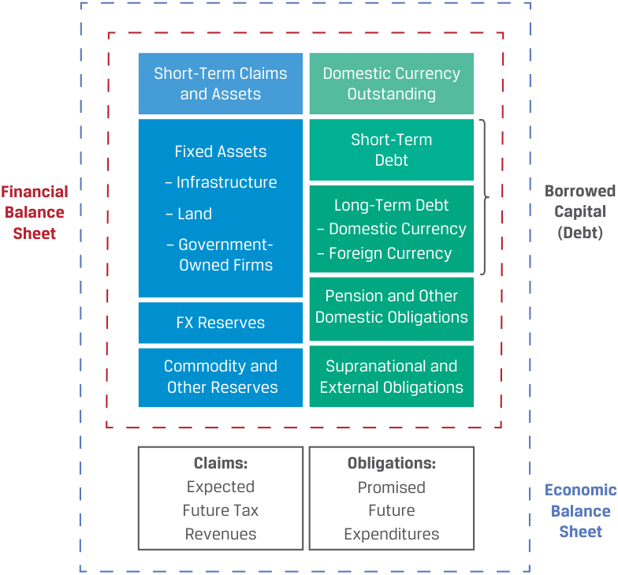
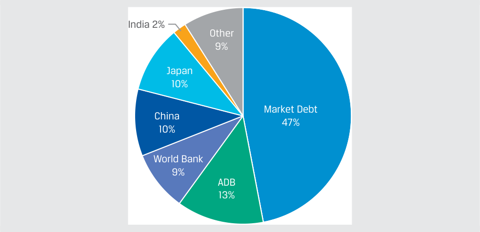
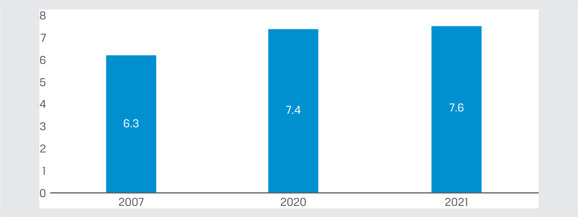
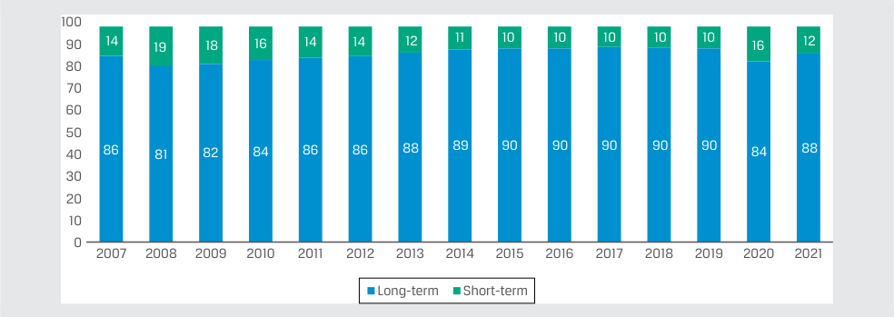

[Toàn Chương] LM05 — Learning Module 5 Fixed-Income Markets for Government Issuers
Volume 6: Fixed Income
Learning Module 5 Fixed-Income Markets for Government Issuers
Part 1/2: Introduction (PDF Pages 117–129)
Tập 6: Chứng Khoán Thu Nhập Cố Định (Fixed Income)
Học phần 5: Thị Trường Thu Nhập Cố Định Cho Các Tổ Chức Phát Hành Chính Phủ (Fixed-Income Markets for Government Issuers)
Phần 1/2: Giới thiệu (Trang PDF 117–129)
L E A R N I N G M O D U L E
H Ọ C P H Ầ N
5
5
Fixed-Income Markets for Government Issuers
Thị Trường Thu Nhập Cố Định Cho Các Tổ Chức Phát Hành Chính Phủ (Fixed-Income Markets for Government Issuers)
LEARNING OUTCOMES
MỤC TIÊU HỌC TẬP (LEARNING OUTCOMES)
| Mastery The candidate should be able to: |
|---|
| Mức độ thành thạo Ứng viên cần có khả năng: |
|---|
| mô tả các lựa chọn huy động vốn của chính phủ trung ương (sovereign governments), chính quyền địa phương/khu vực (non-sovereign governments), các định chế bán chính phủ (quasi-government entities) và các tổ chức siêu quốc gia (supranational agencies) |
| đối chiếu việc phát hành và giao dịch các công cụ thu nhập cố định của chính phủ và của doanh nghiệp |
describe funding choices by sovereign and non-sovereign governments, quasi-government entities, and supranational agencies contrast the issuance and trading of government and corporate fixed-income instruments
INTRODUCTION
GIỚI THIỆU (INTRODUCTION)
1
1
In this module, we complete the review of major fixed-income sectors by focusing on public sector issuers, including sovereign and non-sovereign governments, and how they differ from private sector issuers. Sovereign governments are distinguished by their right to tax within a jurisdiction, while non-sovereign, quasi-government, and supranational issuers may rely on local taxes, fee-based revenue, or other sources of repayment. Sovereign debt issuance is usually conducted through scheduled public auctions, with a different role for financial intermediaries than in private sector issuance. Sovereign debt securities are the most common benchmark securities used in pricing and valuation analyses for fixed-income instruments.
Trong học phần này, chúng ta sẽ hoàn tất việc xem xét các phân khúc thu nhập cố định chính bằng cách tập trung vào các tổ chức phát hành thuộc khu vực công (public sector issuers), bao gồm chính phủ trung ương và chính quyền địa phương/khu vực, cũng như sự khác biệt giữa họ và các tổ chức phát hành thuộc khu vực tư nhân. Chính phủ trung ương (sovereign governments) được phân biệt bởi quyền đánh thuế trong phạm vi quyền tài phán của mình, trong khi các tổ chức phát hành chính quyền địa phương/khu vực (non-sovereign), bán chính phủ (quasi-government) và siêu quốc gia (supranational) có thể dựa vào thuế địa phương, doanh thu từ phí dịch vụ hoặc các nguồn trả nợ khác. Việc phát hành nợ chính phủ trung ương (sovereign debt) thường được thực hiện thông qua các phiên đấu thầu công khai định kỳ theo lịch trình, với vai trò của các định chế trung gian tài chính khác biệt so với trong phát hành của khu vực tư nhân. Chứng khoán nợ chính phủ trung ương là các chứng khoán chuẩn (benchmark securities) phổ biến nhất được sử dụng trong các phân tích định giá đối với các công cụ thu nhập cố định.
LEARNING MODULE OVERVIEW
TỔNG QUAN HỌC PHẦN (LEARNING MODULE OVERVIEW)
- National or sovereign government issuers are distinguished by their legal authority to establish and maintain a country’s public goods and services, as well as their ability to tax economic activity in their jurisdictions. Developed market sovereign issues are characterized by a strong, stable, well-diversified domestic economy, and emerging market sovereign issuers are usually characterized by higher growth but less stable and less well-diversified economies sub- ject to greater fluctuations over the economic cycle.
- Các tổ chức phát hành là chính phủ quốc gia hoặc trung ương (national or sovereign government issuers) được phân biệt bởi thẩm quyền pháp lý nhằm thiết lập và duy trì hàng hóa và dịch vụ công của một quốc gia, cũng như khả năng đánh thuế đối với các hoạt động kinh tế trong phạm vi quyền tài phán của họ. Các đợt phát hành chính phủ tại thị trường phát triển (developed market sovereign issues) có đặc trưng là nền kinh tế nội địa vững mạnh, ổn định và đa dạng hóa tốt, trong khi các tổ chức phát hành chính phủ tại thị trường mới nổi (emerging market sovereign issuers) thường có đặc trưng là tốc độ tăng trưởng cao hơn nhưng nền kinh tế kém ổn định hơn, ít đa dạng hóa hơn và chịu nhiều biến động lớn hơn qua chu kỳ kinh tế.
-
Sovereign debt issues include short-term securities (with maturities ranging from 1 to 12 months), medium- and long-term notes and bonds, and bonds that are guaranteed but not directly issued by the sovereign government.
-
Issuance of sovereign debt usually takes the form of a public auction using standard procedures led by the national treasury or finance ministry, while corporate debt issuances are managed by investment bank underwriters on behalf of issuers. Sovereign governments designate a group of financial intermediaries as primary dealers that are required to participate in all auctions with competitive prices.
-
Once a government debt auction is announced, prospective investors submit competitive or non-competitive bids. Once issued, sovereign debt is usually traded in a manner similar to private sector debt securities, primarily in OTC markets through financial intermediary broker/ dealers.
-
The level and type of non-sovereign government funding vary widely among countries, depending on whether specific goods and services are provided and financed at the national, regional, or local level.
-
Agencies are quasi-government entities that issue debt in order to fund the government-sponsored provision of specific public goods or services based on sovereign or local law. Supranational organizations are created and supported by sovereign governments in pursuit of a common objective.
-
Các đợt phát hành nợ chính phủ trung ương bao gồm chứng khoán ngắn hạn (với kỳ hạn từ 1 đến 12 tháng), trái phiếu trung hạn và dài hạn (notes and bonds), cùng các trái phiếu được bảo lãnh nhưng không trực tiếp phát hành bởi chính phủ trung ương.
-
Việc phát hành nợ chính phủ trung ương thường diễn ra dưới hình thức đấu thầu công khai (public auction) sử dụng các quy trình tiêu chuẩn do kho bạc quốc gia hoặc bộ tài chính chủ trì, trong khi các đợt phát hành nợ doanh nghiệp được quản lý bởi các tổ chức bảo lãnh phát hành thuộc ngân hàng đầu tư (investment bank underwriters) thay mặt cho các tổ chức phát hành. Chính phủ trung ương chỉ định một nhóm các định chế trung gian tài chính làm các đại lý sơ cấp (primary dealers), những đơn vị này bắt buộc phải tham gia vào tất cả các phiên đấu thầu với mức giá cạnh tranh.
-
Khi một phiên đấu thầu nợ chính phủ được công bố, các nhà đầu tư tiềm năng sẽ nộp các lệnh đặt thầu cạnh tranh (competitive bids) hoặc không cạnh tranh (non-competitive bids). Sau khi được phát hành, nợ chính phủ trung ương thường được giao dịch theo phương thức tương tự như chứng khoán nợ khu vực tư nhân, chủ yếu trên các thị trường phi tập trung (OTC markets) thông qua các định chế trung gian tài chính là nhà môi giới/nhà tạo lập thị trường (broker/dealers).
-
Mức độ và loại hình huy động vốn của chính quyền địa phương/khu vực (non-sovereign government) rất khác nhau giữa các quốc gia, tùy thuộc vào việc các hàng hóa và dịch vụ cụ thể được cung cấp và tài trợ ở cấp quốc gia, khu vực hay địa phương.
-
Các cơ quan chức năng (agencies) là những định chế bán chính phủ (quasi-government entities) phát hành nợ nhằm tài trợ cho việc cung cấp các hàng hóa hoặc dịch vụ công cụ thể do chính phủ bảo trợ dựa trên luật pháp quốc gia hoặc địa phương. Các tổ chức siêu quốc gia (supranational organizations) được thành lập và hỗ trợ bởi các chính phủ trung ương nhằm theo đuổi một mục tiêu chung.
LEARNING MODULE SELF-ASSESSMENT
TỰ ĐÁNH GIÁ HỌC PHẦN (LEARNING MODULE SELF-ASSESSMENT)
These initial questions are intended to help you gauge your current level of understanding of this learning module.
Các câu hỏi ban đầu này nhằm giúp bạn đánh giá mức độ hiểu biết hiện tại của mình về học phần này.
- Complete the sentence by selecting the correct words from the options given.
-
A nation’s fiscal policy determines the ( level / composition ) of sovereign debt through central government spending, and government debt management policies address the ( level / composition ) of sovereign debt—that is, short term versus long term, as well as other features.
-
Solution:
- Hoàn thành câu sau bằng cách chọn các từ đúng từ những phương án cho sẵn.
-
Chính sách tài khóa (fiscal policy) của một quốc gia quyết định ( quy mô [level] / cơ cấu [composition] ) của nợ chính phủ trung ương thông qua chi tiêu của chính phủ trung ương, và các chính sách quản lý nợ chính phủ (government debt management policies) giải quyết ( quy mô [level] / cơ cấu [composition] ) của nợ chính phủ trung ương—tức là nợ ngắn hạn so với nợ dài hạn, cũng như các đặc tính khác.
-
Lời giải:
A nation’s fiscal policy determines the level of sovereign debt through central government spending, and government debt management policies address the composition of sovereign debt—that is, short term versus long term, as well as other features.
Chính sách tài khóa của một quốc gia quyết định quy mô (level) của nợ chính phủ trung ương thông qua chi tiêu của chính phủ trung ương, và các chính sách quản lý nợ chính phủ giải quyết cơ cấu (composition) của nợ chính phủ trung ương—tức là nợ ngắn hạn so với nợ dài hạn, cũng như các đặc tính khác.
- The issuer ranks bids by prices, choosing bids from highest to lowest until the desired issuance amount is reached, for:
-
A. single-price auctions.
-
B. multiple-price auctions.
- Tổ chức phát hành xếp hạng các lệnh đặt thầu theo mức giá, lựa chọn các lệnh đặt thầu từ cao nhất đến thấp nhất cho đến khi đạt được quy mô phát hành mong muốn, đối với:
-
A. đấu thầu một mức giá (single-price auctions).
-
B. đấu thầu nhiều mức giá (multiple-price auctions).
-
C. single-price and multiple-price auctions.
-
Solution:
-
C is correct. For both a single-price and a multiple-price auction, the issuer ranks bids by prices, choosing bids from highest to lowest until the desired issuance amount is reached.
- Compare the role of financial intermediaries when engaging with sovereign issuers versus corporate debt issuers.
-
C. cả đấu thầu một mức giá và đấu thầu nhiều mức giá (single-price and multiple-price auctions).
-
Lời giải:
-
C là đáp án đúng. Đối với cả đấu thầu một mức giá và đấu thầu nhiều mức giá, tổ chức phát hành đều xếp hạng các lệnh đặt thầu theo giá, lựa chọn các lệnh đặt thầu từ cao nhất đến thấp nhất cho đến khi đạt được quy mô phát hành mong muốn.
- So sánh vai trò của các định chế trung gian tài chính khi làm việc với các tổ chức phát hành chính phủ trung ương so với các tổ chức phát hành nợ doanh nghiệp.
Solution:
Lời giải:
Sovereign issuers engage with financial intermediaries, like corporate debt issuers, but in a different form. Sovereign governments designate a group of financial intermediaries as primary dealers that are required to participate in all auctions with competitive prices, often serve as the central bank’s counterparty for open market operations, and facilitate the purchase and sale of government debt by foreign central banks and other indirect bidders. Corporate debt issuances, in contrast, are managed by investment bank underwriters on behalf of issuers.
Các tổ chức phát hành chính phủ trung ương làm việc với các định chế trung gian tài chính giống như các tổ chức phát hành nợ doanh nghiệp, nhưng dưới một hình thức khác. Chính phủ trung ương chỉ định một nhóm các định chế trung gian tài chính làm các đại lý sơ cấp (primary dealers), những đơn vị bắt buộc phải tham gia vào tất cả các phiên đấu thầu với mức giá cạnh tranh, thường đóng vai trò là đối tác của ngân hàng trung ương trong các nghiệp vụ thị trường mở (open market operations), và tạo điều kiện thuận lợi cho việc mua bán nợ chính phủ của các ngân hàng trung ương nước ngoài cùng các nhà đặt thầu gián tiếp khác. Ngược lại, các đợt phát hành nợ doanh nghiệp được quản lý bởi các tổ chức bảo lãnh phát hành thuộc ngân hàng đầu tư (investment bank underwriters) thay mặt cho các tổ chức phát hành.
- The ability of _____ government issuers to access funding across maturities is affected by the predictability and stability of sources of repayment.
-
A. Sovereign
-
B. Non-sovereign
-
C. Both sovereign and non-sovereign
-
Solution:
-
C is correct. Borrowing costs and access to financing for both sovereign and non-sovereign government issuers are affected by their credit quality.
- Identify the following statement as true or false. Justify your answer.
- Khả năng của các tổ chức phát hành chính phủ _____ trong việc tiếp cận nguồn vốn qua các kỳ hạn bị ảnh hưởng bởi tính có thể dự đoán và sự ổn định của các nguồn trả nợ.
-
A. Trung ương (Sovereign)
-
B. Địa phương/khu vực (Non-sovereign)
-
C. Cả chính phủ trung ương và chính quyền địa phương/khu vực (Both sovereign and non-sovereign)
-
Lời giải:
-
C là đáp án đúng. Chi phí đi vay và khả năng tiếp cận nguồn tài trợ của cả các tổ chức phát hành chính phủ trung ương và chính quyền địa phương/khu vực đều bị ảnh hưởng bởi chất lượng tín dụng (credit quality) của họ.
- Xác định phát biểu sau đây là đúng hay sai. Giải thích câu trả lời của bạn.
Sovereign agencies, such as the Airport Authority of Hong Kong (AAHK) and the Government National Mortgage Association (Ginnie Mae), benefit from the full liquidity premium associated with sovereign debt.
Các cơ quan chính phủ trung ương (sovereign agencies), chẳng hạn như Cơ quan Quản lý Sân bay Hồng Kông (AAHK) và Hiệp hội Thế chấp Quốc gia Chính phủ Hoa Kỳ (Ginnie Mae), được hưởng toàn bộ phần bù thanh khoản (liquidity premium) gắn liền với nợ chính phủ trung ương.
Solution:
Lời giải:
False. While each of these sovereign agencies is typically able to borrow at a yield-to-maturity near that of their sovereign guarantor, neither will benefit from the full liquidity premium associated with sovereign debt.
Sai. Mặc dù mỗi cơ quan chính phủ trung ương này thường có thể đi vay ở mức lợi suất đáo hạn (yield-to-maturity) gần bằng với mức lợi suất của chính phủ trung ương bảo lãnh cho họ, nhưng không cơ quan nào được hưởng toàn bộ phần bù thanh khoản gắn liền với nợ chính phủ trung ương.
SOVEREIGN DEBT
NỢ CHÍNH PHỦ TRUNG ƯƠNG (SOVEREIGN DEBT)
2
2
describe funding choices by sovereign and non-sovereign governments, quasi-government entities, and supranational agencies
mô tả các lựa chọn huy động vốn của chính phủ trung ương (sovereign governments), chính quyền địa phương/khu vực (non-sovereign governments), các định chế bán chính phủ (quasi-government entities) và các tổ chức siêu quốc gia (supranational agencies)
National or sovereign government issuers are distinguished by their legal authority to establish and maintain a country’s public goods and services and their ability to tax economic activity in their jurisdiction. Additional sources of repayment for their
Các tổ chức phát hành là chính phủ quốc gia hoặc trung ương (national or sovereign government issuers) được phân biệt bởi thẩm quyền pháp lý nhằm thiết lập và duy trì hàng hóa và dịch vụ công của một quốc gia cũng như khả năng đánh thuế đối với các hoạt động kinh tế trong phạm vi quyền tài phán của họ. Các nguồn trả nợ bổ sung cho các nghĩa vụ
debt obligations include tariffs, usage fees, and cash flows from government-owned enterprises. The size and scope of public goods and services provided by national, versus regional or local, governments vary widely among markets, as does the degree of government involvement in the economy. Similar to private sector issuers, a government’s “economic balance sheet” may be used to illustrate the sources and uses of funding, as shown in Exhibit 1, which also includes activities of the central bank.
nợ của họ bao gồm thuế quan (tariffs), phí sử dụng (usage fees) và dòng tiền từ các doanh nghiệp nhà nước (government-owned enterprises). Quy mô và phạm vi của các hàng hóa và dịch vụ công do chính phủ quốc gia cung cấp so với chính quyền khu vực hoặc địa phương rất khác nhau giữa các thị trường, cũng như mức độ can thiệp của chính phủ vào nền kinh tế. Tương tự như các tổ chức phát hành khu vực tư nhân, “bảng cân đối kế toán kinh tế” (economic balance sheet) của một chính phủ có thể được sử dụng để minh họa các nguồn vốn và việc sử dụng vốn, như được thể hiện trong Bảng minh họa 1 (bao gồm cả các hoạt động của ngân hàng trung ương).
Exhibit 1: Government “Balance Sheet”
Bảng minh họa 1: “Bảng cân đối kế toán” của Chính phủ (Government “Balance Sheet”)

Chú thích hình ảnh: - Bảng cân đối kế toán tài chính (Financial Balance Sheet): - Bên Tài sản / Quyền đòi nợ (Assets / Claims): Quyền đòi nợ và tài sản ngắn hạn (Short-Term Claims and Assets); Tài sản cố định (Fixed Assets): Cơ sở hạ tầng (Infrastructure), Đất đai (Land), Doanh nghiệp nhà nước (Government-Owned Firms); Dự trữ ngoại hối (FX Reserves); Dự trữ hàng hóa và dự trữ khác (Commodity and Other Reserves). - Bên Nguồn vốn vay / Nợ (Borrowed Capital / Debt): Đồng nội tệ đang lưu hành (Domestic Currency Outstanding); Nợ ngắn hạn (Short-Term Debt); Nợ dài hạn (Long-Term Debt): Đồng nội tệ (Domestic Currency), Ngoại tệ (Foreign Currency); Nghĩa vụ hưu trí và các nghĩa vụ nội địa khác (Pension and Other Domestic Obligations); Nghĩa vụ siêu quốc gia và đối ngoại (Supranational and External Obligations). - Bảng cân đối kế toán kinh tế (Economic Balance Sheet): Bao gồm thêm Quyền đòi nợ (Claims): Doanh thu thuế kỳ vọng trong tương lai (Expected Future Tax Revenues) và Nghĩa vụ (Obligations): Chi tiêu cam kết trong tương lai (Promised Future Expenditures).
While private issuers prepare and file periodic financial statements in accordance with generally accepted accounting principles (GAAP), public sector financial accounting standards vary widely and are often prepared using cash, rather than accrual-based, principles, typically excluding such items as the depreciation of fixed public goods, such as federal highways, or the accrual of unfunded liabilities, such as government pension obligations. In contrast, the economic balance sheet in Exhibit 1 includes expected future claims and obligations and is therefore of greater relevance for public versus private sector issuers.
Trong khi các tổ chức phát hành tư nhân lập và nộp báo cáo tài chính định kỳ theo các nguyên tắc kế toán được chấp nhận chung (GAAP), các chuẩn mực kế toán tài chính khu vực công lại rất đa dạng và thường được lập theo nguyên tắc cơ sở tiền mặt (cash-based) thay vì cơ sở dồn tích (accrual-based), thường loại trừ các khoản mục như khấu hao hàng hóa công cố định (chẳng hạn như đường cao tốc liên bang) hoặc việc trích lập dồn tích các khoản nợ chưa có nguồn tài trợ (chẳng hạn như nghĩa vụ lương hưu của chính phủ). Ngược lại, bảng cân đối kế toán kinh tế trong Bảng minh họa 1 bao gồm các quyền đòi nợ và nghĩa vụ kỳ vọng trong tương lai, do đó có mức độ phù hợp cao hơn đối với các tổ chức phát hành khu vực công so với khu vực tư nhân.
The relative size of the government sector as a proportion of the domestic economy varies widely among nations, and the allocation of these activities between the national government itself, quasi-government agencies, and local governments also differs among countries. As a result, this gives rise to non-sovereign issuers based in the same jurisdiction as the sovereign issuer, a topic discussed in Lesson 3.
Quy mô tương đối của khu vực chính phủ tính theo tỷ trọng trong nền kinh tế nội địa rất khác nhau giữa các quốc gia, và sự phân bổ các hoạt động này giữa bản thân chính phủ quốc gia, các cơ quan bán chính phủ và chính quyền địa phương cũng khác biệt giữa các nước. Do đó, điều này làm xuất hiện các tổ chức phát hành chính quyền địa phương/khu vực (non-sovereign issuers) có trụ sở trong cùng phạm vi quyền tài phán với tổ chức phát hành chính phủ trung ương—một chủ đề sẽ được thảo luận ở Bài 3.
A key distinction among national government issuers is the difference between developed market and emerging market sovereign issuers.
Một sự phân biệt quan trọng giữa các tổ chức phát hành chính phủ quốc gia là sự khác biệt giữa các tổ chức phát hành chính phủ tại thị trường phát triển (developed market) và thị trường mới nổi (emerging market).
- Developed market (DM) sovereign issuers: DMs are characterized by a strong, stable, well-diversified domestic economy. DM national government budgets primarily comprise consistent, recurrent outlays financed with broad-based individual and business tax cash flows, resulting in stable and transparent fiscal policy. DM fixed-income securities are denominated in a
- Các tổ chức phát hành chính phủ tại thị trường phát triển (Developed market – DM sovereign issuers): Các thị trường phát triển (DM) có đặc trưng là một nền kinh tế nội địa vững mạnh, ổn định và đa dạng hóa tốt. Ngân sách chính phủ quốc gia tại DM chủ yếu bao gồm các khoản chi tiêu thường xuyên, nhất quán được tài trợ bằng dòng tiền thuế cá nhân và doanh nghiệp trên diện rộng, mang lại chính sách tài khóa ổn định và minh bạch. Chứng khoán thu nhập cố định tại DM được định danh bằng một
major currency commonly held in reserve by foreign governments. These features allow DM sovereign governments to issue what is often referred to as default-risk-free debt with unconstrained market access across the maturity spectrum.
đồng tiền mạnh (major currency) thường được các chính phủ nước ngoài nắm giữ làm dự trữ. Những đặc điểm này cho phép các chính phủ trung ương tại DM phát hành loại nợ thường được gọi là nợ phi rủi ro vỡ nợ (default-risk-free debt) với khả năng tiếp cận thị trường không bị hạn chế trên toàn bộ phổ kỳ hạn (maturity spectrum).
- Emerging market (EM) sovereign issuers: EMs are usually characterized by higher growth but less stable and less well-diversified economies subject to greater fluctuations over the economic cycle. EMs often depend on a dominant domestic industry or industries, such as commodities, and may involve more state-owned or state-controlled enterprises. Central government budget priorities may involve investments to expand economic and social infrastructure that exceed current domestic tax cash flows, giving rise to external or supranational funding. EM sovereign debt securities are often denominated in a restricted domestic currency , or one with limited convertibility into other currencies due to illiquidity. Currency restrictions may limit foreign investment and constrain access to longer-term maturities in domestic currency.
- Các tổ chức phát hành chính phủ tại thị trường mới nổi (Emerging market – EM sovereign issuers): Các thị trường mới nổi (EM) thường có đặc trưng là tốc độ tăng trưởng cao hơn nhưng nền kinh tế kém ổn định hơn, ít đa dạng hóa hơn và chịu nhiều biến động lớn hơn qua chu kỳ kinh tế. Các EM thường phụ thuộc vào một hoặc một số ngành công nghiệp nội địa thống trị, chẳng hạn như hàng hóa cơ bản (commodities), và có thể bao gồm nhiều doanh nghiệp nhà nước hoặc do nhà nước kiểm soát hơn. Các ưu tiên ngân sách của chính phủ trung ương có thể bao gồm các khoản đầu tư nhằm mở rộng cơ sở hạ tầng kinh tế và xã hội vượt quá dòng tiền thuế nội địa hiện tại, làm phát sinh nhu cầu huy động vốn từ bên ngoài (external funding) hoặc từ các tổ chức siêu quốc gia (supranational funding). Chứng khoán nợ chính phủ EM thường được định danh bằng một đồng nội tệ bị hạn chế (restricted domestic currency), tức là đồng tiền có khả năng chuyển đổi hạn chế sang các đồng tiền khác do tính kém thanh khoản. Các hạn chế tiền tệ có thể giới hạn đầu tư nước ngoài và cản trở khả năng tiếp cận các kỳ hạn dài hơn bằng đồng nội tệ.
In the case of emerging market sovereign issuers, it is important to further distinguish between domestic debt issued in the domestic currency and external debt , or debt owed to foreign creditors. Sovereign bonds issued in domestic currency are often held mostly by domestic financial institutions and other domestic investors.
Trong trường hợp của các tổ chức phát hành chính phủ tại thị trường mới nổi, điều quan trọng là phải phân biệt rõ hơn giữa nợ nội địa (domestic debt) được phát hành bằng đồng nội tệ và nợ nước ngoài (external debt), tức là khoản nợ phải trả cho các chủ nợ nước ngoài. Trái phiếu chính phủ phát hành bằng đồng nội tệ thường được nắm giữ chủ yếu bởi các định chế tài chính trong nước và các nhà đầu tư nội địa khác.
External debt of emerging and frontier market sovereign issuers comprises debt from supranational financial organizations and debt issuance denominated in a foreign currency held by foreign private investors. Earlier modules cited examples of emerging market sovereign Eurobond issuance, such as Romania’s euro-denominated bond and the quasi-government PT Indonesia Infrastructure Finance US dollar–denominated bond. Investors based in developed markets who purchase these bonds do not face the same direct currency risk as for domestic currency emerging market sovereign debt. However, they face indirect exposure to currency fluctuations, because their returns depend on an issuer’s ability to generate foreign currency revenue through international capital, goods, and services flows sufficient to meet foreign currency interest and principal payments. The following example highlights the case of the government of Sri Lanka’s external debt.
Nợ nước ngoài của các tổ chức phát hành chính phủ tại thị trường mới nổi và thị trường cận biên (frontier market) bao gồm các khoản nợ vay từ các tổ chức tài chính siêu quốc gia và các đợt phát hành nợ định danh bằng ngoại tệ do các nhà đầu tư tư nhân nước ngoài nắm giữ. Các học phần trước đã dẫn chứng những ví dụ về việc phát hành trái phiếu Eurobond của chính phủ thị trường mới nổi, chẳng hạn như trái phiếu định danh bằng đồng euro của Romania và trái phiếu định danh bằng đồng đô la Mỹ của định chế bán chính phủ PT Indonesia Infrastructure Finance. Các nhà đầu tư có trụ sở tại các thị trường phát triển khi mua những trái phiếu này không phải đối mặt với rủi ro tiền tệ trực tiếp (direct currency risk) giống như đối với nợ chính phủ thị trường mới nổi bằng đồng nội tệ. Tuy nhiên, họ phải chịu sự phơi nhiễm gián tiếp (indirect exposure) trước các biến động tiền tệ, bởi vì tỷ suất sinh lợi của họ phụ thuộc vào khả năng tạo ra doanh thu ngoại tệ của tổ chức phát hành thông qua các dòng vốn, hàng hóa và dịch vụ quốc tế đủ để đáp ứng các khoản thanh toán lãi và gốc bằng ngoại tệ. Ví dụ sau đây làm nổi bật trường hợp nợ nước ngoài của chính phủ Sri Lanka.
GOVERNMENT OF SRI LANKA EXTERNAL DEBT
NỢ NƯỚC NGOÀI CỦA CHÍNH PHỦ SRI LANKA (GOVERNMENT OF SRI LANKA EXTERNAL DEBT)
In May 2022, Sri Lanka became the first Asia-Pacific country in many years to default on its external debt when it failed to make USD78 million in foreign currency interest payments following a 30-day grace period. Sri Lanka’s government debt rose sharply in the years preceding the default due in large part to infrastructure projects financed by global debt markets, supranational agencies, and major trading partners. Total government debt outstanding rose from 87% of Sri Lanka’s GDP to over 100% in 2020, while both its economy and foreign currency reserves shrank during that year due to a collapse in tourism and declining remittances from citizens working abroad. Higher inflation and commodity prices in the wake of the 2022 war in Ukraine compounded the country’s external debt problems and ultimately led to default.
Vào tháng 5 năm 2022, Sri Lanka đã trở thành quốc gia châu Á - Thái Bình Dương đầu tiên sau nhiều năm vỡ nợ đối với khoản nợ nước ngoài khi nước này không thể thực hiện khoản thanh toán lãi bằng ngoại tệ trị giá 78 triệu USD sau thời gian ân hạn (grace period) 30 ngày. Nợ chính phủ của Sri Lanka đã tăng vọt trong những năm trước khi vỡ nợ, phần lớn là do các dự án cơ sở hạ tầng được tài trợ bởi thị trường nợ toàn cầu, các tổ chức siêu quốc gia và các đối tác thương mại lớn. Tổng dư nợ chính phủ đã tăng từ mức 87% GDP của Sri Lanka lên hơn 100% vào năm 2020, trong khi cả nền kinh tế lẫn dự trữ ngoại hối của nước này đều sụt giảm trong năm đó do sự sụp đổ của ngành du lịch và sự sụt giảm kiều hối từ công dân làm việc ở nước ngoài. Lạm phát và giá hàng hóa cơ bản tăng cao sau cuộc chiến năm 2022 tại Ukraine đã làm trầm trọng thêm các vấn đề nợ nước ngoài của quốc gia này và cuối cùng dẫn đến vỡ nợ.
Sri Lanka’s External Debt, 2021
Nợ Nước Ngoài của Sri Lanka, 2021 (Sri Lanka’s External Debt, 2021)

Chú thích hình ảnh: Cơ cấu nợ nước ngoài của Sri Lanka năm 2021: - Nợ thị trường (Market Debt): 47% - Ngân hàng Phát triển Châu Á (ADB): 13% - Trung Quốc (China): 10% - Nhật Bản (Japan): 10% - Ngân hàng Thế giới (World Bank): 9% - Khác (Other): 9% - Ấn Độ (India): 2%
Note: “Market Debt” is primarily international sovereign bonds denominated in US dollars and owned by foreign private investors, including mutual funds.
Ghi chú: “Nợ thị trường” (Market Debt) chủ yếu là các trái phiếu chính phủ quốc tế định danh bằng đồng đô la Mỹ và thuộc sở hữu của các nhà đầu tư tư nhân nước ngoài, bao gồm các quỹ tương hỗ (mutual funds).
Sources: Government of Sri Lanka, Department of External Resources (www .erd .gov .lk). Lilian Karunungan and Amelia Pollard, “Sri Lanka Falls into Default for the First Time Ever,” Bloomberg (19 May 2022). Bank for International Settlements, “Debt Securities Statistics.” “Infrastructure Financing in Sri Lanka: Lessons Learnt and Future Collaborations,” European Institute for Asian Studies Policy Brief 16/2021.
Nguồn: Chính phủ Sri Lanka, Cục Nguồn lực Đối ngoại (www.erd.gov.lk). Lilian Karunungan và Amelia Pollard, “Sri Lanka Falls into Default for the First Time Ever,” Bloomberg (19 tháng 5 năm 2022). Ngân hàng Thanh toán Quốc tế (BIS), “Debt Securities Statistics.” “Infrastructure Financing in Sri Lanka: Lessons Learnt and Future Collaborations,” Viện Nghiên cứu Châu Á của Châu Âu, Tóm tắt Chính sách 16/2021.
A nation’s fiscal policy determines the level of sovereign debt through central government spending, including both budgetary requirements and debt service costs, against tax receipts, fees, and revenue from government-owned enterprises or other sources. Government budget deficits increase the need for borrowing while surpluses reduce borrowing needs. Forecasts of sovereign debt levels must consider not only changes in fiscal policy but also the sensitivity of expenditures and revenues to changes in economic growth and inflation.
Chính sách tài khóa của một quốc gia quyết định quy mô (level) nợ chính phủ trung ương thông qua chi tiêu của chính phủ trung ương, bao gồm cả nhu cầu ngân sách và chi phí trả nợ (debt service costs), đối chiếu với nguồn thu thuế, phí và doanh thu từ các doanh nghiệp nhà nước hoặc các nguồn khác. Thâm hụt ngân sách chính phủ làm tăng nhu cầu đi vay trong khi thặng dư ngân sách làm giảm nhu cầu đi vay. Các dự báo về quy mô nợ chính phủ trung ương phải xem xét không chỉ những thay đổi trong chính sách tài khóa mà còn cả độ nhạy của các khoản chi tiêu và doanh thu trước những thay đổi về tăng trưởng kinh tế và lạm phát.
Government debt management policies address the composition of sovereign debt—that is, short term versus long term, as well as other features. Sovereign debt issues include the following:
Các chính sách quản lý nợ chính phủ (government debt management) giải quyết cơ cấu (composition) của nợ chính phủ trung ương—tức là nợ ngắn hạn so với nợ dài hạn, cũng như các đặc tính khác. Các đợt phát hành nợ chính phủ trung ương bao gồm:
-
Short-term securities (with maturities ranging from 1 to 12 months), often known as Treasury bills, which are usually zero-coupon instruments sold at a discount to par.
-
Medium- and long-term securities often known as Treasury notes and bonds. Fixed-rate coupon instruments in the domestic currency are most common, but sovereigns also issue floating-rate, inflation-linked, and foreign currency instruments.
-
While not acting as the issuer, some sovereign governments guarantee certain other instruments that, in effect, make them a type of sovereign debt. The most prominent example is mortgage-backed securities, especially in the United States, that conform to certain criteria. Such instruments will be discussed in detail later.
-
Chứng khoán ngắn hạn (với kỳ hạn từ 1 đến 12 tháng), thường được gọi là tín phiếu Kho bạc (Treasury bills), thường là các công cụ không trả lãi định kỳ (zero-coupon instruments) được bán ở mức chiết khấu so với mệnh giá (discount to par).
-
Chứng khoán trung hạn và dài hạn, thường được gọi là trái phiếu Kho bạc trung hạn và dài hạn (Treasury notes and bonds). Các công cụ trả lãi coupon cố định (fixed-rate coupon instruments) bằng đồng nội tệ là phổ biến nhất, nhưng các chính phủ trung ương cũng phát hành các công cụ lãi suất thả nổi (floating-rate), gắn với lạm phát (inflation-linked) và định danh bằng ngoại tệ.
-
Mặc dù không đóng vai trò là tổ chức phát hành trực tiếp, một số chính phủ trung ương bảo lãnh cho một số công cụ khác mà trên thực tế biến chúng thành một dạng nợ chính phủ trung ương. Ví dụ nổi bật nhất là các chứng khoán đảm bảo bằng thế chấp (mortgage-backed securities – MBS), đặc biệt là tại Hoa Kỳ, khi tuân thủ các tiêu chí nhất định. Các công cụ như vậy sẽ được thảo luận chi tiết sau.
Given the sovereign right to levy taxes on economic activity, national governments represent the lowest default risk among domestic currency issuers and are usually the largest bond issuer in a domestic market.
Với quyền tối cao trong việc đánh thuế đối với hoạt động kinh tế, các chính phủ quốc gia đại diện cho mức rủi ro vỡ nợ thấp nhất trong số các tổ chức phát hành bằng đồng nội tệ và thường là tổ chức phát hành trái phiếu lớn nhất trên thị trường nội địa.
Recall from earlier in the corporate issuers reading that the Modigliani–Miller (MM) theorem stated that under certain strict conditions, a company’s choice of capital structure is irrelevant in determining the present value of the firm’s expected future cash flows. In the case of sovereign government debt, the Ricardian equivalence
Hãy nhớ lại từ bài đọc trước về các tổ chức phát hành doanh nghiệp rằng định lý Modigliani–Miller (MM) phát biểu rằng dưới những điều kiện nghiêm ngặt nhất định, việc lựa chọn cấu trúc vốn của một công ty không ảnh hưởng đến việc xác định giá trị hiện tại của dòng tiền kỳ vọng trong tương lai của doanh nghiệp đó. Trong trường hợp nợ chính phủ trung ương, định lý tương đương Ricardo (Ricardian equivalence theorem)
theorem introduced in an earlier economics lesson, which was based on similar simplified assumptions, gives an analogous result: a government’s choice of debt maturity is irrelevant in determining the present value of future tax cash flows.
được giới thiệu trong một bài học kinh tế học trước đó, dựa trên các giả định đơn giản hóa tương tự, cũng đưa ra một kết quả tương đồng: sự lựa chọn kỳ hạn nợ của chính phủ không ảnh hưởng đến việc xác định giá trị hiện tại của các dòng tiền thuế trong tương lai.
Under Ricardian equivalence, taxpayers expect government debt to be offset by higher future taxes, suggesting that a sovereign government should be indifferent between collecting taxes today or raising debt of any maturity based on the following assumptions:
Theo định lý tương đương Ricardo, người nộp thuế kỳ vọng nợ chính phủ sẽ được bù đắp bằng mức thuế cao hơn trong tương lai, ngụ ý rằng chính phủ trung ương sẽ bàng quan giữa việc thu thuế ngay hôm nay hoặc huy động nợ ở bất kỳ kỳ hạn nào dựa trên các giả định sau:
-
Taxpayers smooth consumption over time, saving expected future taxes today for future payment.
-
Taxpayers form rational expectations that today’s tax cuts will result in future tax increases.
-
Capital markets are perfect with no transaction costs, and taxpayers can freely borrow and lend.
-
Taxpayers are altruistic on an intergenerational basis; that is, they pass on tax savings to descendants.
-
Người nộp thuế làm mượt tiêu dùng (smooth consumption) theo thời gian, tiết kiệm khoản thuế kỳ vọng phải nộp trong tương lai ngay từ hôm nay để thanh toán trong tương lai.
-
Người nộp thuế hình thành kỳ vọng hợp lý (rational expectations) rằng việc cắt giảm thuế ngày hôm nay sẽ dẫn đến việc tăng thuế trong tương lai.
-
Thị trường vốn là hoàn hảo không có chi phí giao dịch, và người nộp thuế có thể tự do đi vay và cho vay.
-
Người nộp thuế có lòng vị tha giữa các thế hệ (altruistic on an intergenerational basis); nghĩa là họ chuyển giao khoản tiết kiệm thuế cho con cháu đời sau.
The relaxation of these Ricardian equivalence assumptions to allow imperfect capital markets and friction costs between bond investors and taxpayers gives rise to debt management policies that offer liquidity benefits to investors and other issuers across the maturity spectrum.
Việc nới lỏng các giả định của định lý tương đương Ricardo để cho phép thị trường vốn không hoàn hảo và có chi phí ma sát (friction costs) giữa các nhà đầu tư trái phiếu và người nộp thuế đã làm xuất hiện các chính sách quản lý nợ mang lại lợi ích thanh khoản cho các nhà đầu tư và các tổ chức phát hành khác trên toàn bộ phổ kỳ hạn.
For example, short-term government issuance provides investors with a high degree of liquidity and safety and often substitutes for bank deposits. Under normal market conditions, the prices of these very short-term government securities involve a liquidity premium; that is, their yields-to-maturity will tend to be lower than they otherwise would be in the absence of this liquidity benefit. While short-term sovereign debt is typically issued at regular intervals (discussed later) and standard maturities, government issuers have a high degree of flexibility to alter the size of these periodic auctions to manage uncertain cash flows, such as near-term tax receipts or unforeseen funding needs.
Ví dụ, việc phát hành nợ chính phủ ngắn hạn cung cấp cho các nhà đầu tư mức độ thanh khoản và an toàn cao, đồng thời thường thay thế cho tiền gửi ngân hàng. Trong điều kiện thị trường bình thường, giá của những chứng khoán chính phủ rất ngắn hạn này bao hàm một phần bù thanh khoản (liquidity premium); nghĩa là lợi suất đáo hạn (yields-to-maturity) của chúng sẽ có xu hướng thấp hơn so với mức lẽ ra phải có nếu không có lợi ích thanh khoản này. Mặc dù nợ chính phủ trung ương ngắn hạn thường được phát hành theo các khoảng thời gian đều đặn (sẽ thảo luận sau) và có các kỳ hạn tiêu chuẩn, các tổ chức phát hành chính phủ có mức độ linh hoạt cao trong việc thay đổi quy mô của các phiên đấu thầu định kỳ này nhằm quản lý các dòng tiền không chắc chắn, chẳng hạn như nguồn thu thuế ngắn hạn hoặc các nhu cầu vốn phát sinh ngoài dự kiến.
Strict adherence to Ricardian equivalence assumptions suggests that governments should fund themselves with the shortest possible maturity to minimize borrowing costs and avoid paying any term premium associated with longer-term interest rates. However, similar to the example of corporate bonds in the prior module, excessive government reliance on short-term funding introduces rollover risk, or uncertain refinancing costs, increasing the variability of budget costs and therefore tax rates. Since taxpayers are unable to perfectly smooth consumption over time nor do they form rational expectations about current versus future taxes across generations, fiscal instability creates uncertainty in future tax rates and threatens the stability of economic growth over time. Therefore, in practice, governments seek to minimize interest rate and rollover risks by distributing debt across maturities, while issuing debt in regular, predictable intervals.
Việc tuân thủ nghiêm ngặt các giả định tương đương Ricardo gợi ý rằng các chính phủ nên tự tài trợ bằng kỳ hạn ngắn nhất có thể nhằm tối thiểu hóa chi phí đi vay và tránh phải trả bất kỳ phần bù kỳ hạn (term premium) nào gắn liền với lãi suất dài hạn. Tuy nhiên, tương tự như ví dụ về trái phiếu doanh nghiệp trong học phần trước, sự phụ thuộc quá mức của chính phủ vào nguồn vốn ngắn hạn sẽ làm phát sinh rủi ro đảo nợ (rollover risk), hay chi phí tái cấp vốn không chắc chắn, làm gia tăng sự biến động của chi phí ngân sách và do đó làm biến động thuế suất. Vì người nộp thuế không thể làm mượt tiêu dùng một cách hoàn hảo theo thời gian và cũng không hình thành các kỳ vọng hợp lý về thuế hiện tại so với thuế tương lai qua các thế hệ, sự bất ổn tài khóa sẽ tạo ra sự không chắc chắn về thuế suất trong tương lai và đe dọa sự ổn định của tăng trưởng kinh tế theo thời gian. Do đó, trên thực tế, các chính phủ tìm cách tối thiểu hóa rủi ro lãi suất và rủi ro đảo nợ bằng cách phân bổ nợ qua nhiều kỳ hạn khác nhau, đồng thời phát hành nợ theo các khoảng thời gian đều đặn và có thể dự đoán được.
Fiscal policies differ significantly across the 38 OECD member countries, but their sovereign debt maturity structures have shown far less variance. At the end of 2021, the weighted average maturity across the OECD was just over one year higher than the average at the end of 2007. Long-term debt represented 85% of total sovereign debt outstanding, largely unchanged since 2007, while annual issuance was evenly split between short and long term (short-term debt must be issued more frequently because it matures sooner). This time frame includes two major recessions and significant sovereign debt issuance.
Các chính sách tài khóa có sự khác biệt đáng kể giữa 38 quốc gia thành viên OECD, nhưng cấu trúc kỳ hạn nợ chính phủ trung ương của họ lại cho thấy phương sai nhỏ hơn nhiều. Vào cuối năm 2021, kỳ hạn bình quân gia quyền trên toàn khối OECD chỉ cao hơn một chút so với mức một năm trên mức trung bình vào cuối năm 2007. Nợ dài hạn chiếm 85% tổng dư nợ chính phủ trung ương đang lưu hành, hầu như không thay đổi kể từ năm 2007, trong khi khối lượng phát hành hàng năm được chia đều giữa ngắn hạn và dài hạn (nợ ngắn hạn phải được phát hành thường xuyên hơn vì chúng đáo hạn sớm hơn). Khung thời gian này bao gồm hai cuộc suy thoái lớn và khối lượng phát hành nợ chính phủ trung ương đáng kể.
Average Time to Maturity of OECD Nations’ Sovereign Debt Outstanding (Years)
Thời Gian Đáo Hạn Bình Quân của Dư Nợ Chính Phủ Trung Ương tại Các Quốc Gia OECD (Số năm) (Average Time to Maturity of OECD Nations’ Sovereign Debt Outstanding (Years))

Chú thích hình ảnh: Thời gian đáo hạn bình quân (tính bằng năm) của dư nợ chính phủ trung ương tại các nước OECD: năm 2007 là 6,3 năm; năm 2020 là 7,4 năm; năm 2021 là 7,6 năm.
Maturity Structure of OECD Nations’ Sovereign Government Debt Outstanding (Percent)
Cấu Trúc Kỳ Hạn của Dư Nợ Chính Phủ Trung Ương tại Các Quốc Gia OECD (Phần trăm) (Maturity Structure of OECD Nations’ Sovereign Government Debt Outstanding (Percent))

Chú thích hình ảnh: Cấu trúc kỳ hạn (tỷ lệ %) của dư nợ chính phủ trung ương tại các nước OECD từ năm 2007 đến năm 2021, chia thành hai phần: Dài hạn (Long-term, chiếm từ 81% đến 90%) và Ngắn hạn (Short-term, chiếm từ 10% đến 19%).
Nguồn: OECD, “OECD Sovereign Borrowing Outlook 2022” (2022). https://doi.org/10.1787/b2d85ea7-en.
Source: OECD, “OECD Sovereign Borrowing Outlook 2022” (2022). https:// doi .org/ 10 .1787/ b2d85ea7 -en.
Việc sử dụng phát hành nợ chính phủ trung ương trung và dài hạn phải cân bằng sự đánh đổi giữa chi phí đi vay cao hơn với sự ổn định tài khóa lớn hơn, đồng thời xem xét lợi ích thanh khoản hoặc các lợi ích khác của việc phát hành trái phiếu có rủi ro vỡ nợ thấp nhất trên toàn bộ phổ kỳ hạn.
The use of medium- and long-term sovereign funding issuance must balance the trade-off of higher borrowing costs with greater fiscal stability, while considering liquidity or other benefits of issuing bonds with the lowest default risk across the maturity spectrum.
The benefits of issuing sufficient longer-term sovereign government securities to maintain liquidity across maturities include the following:
Những lợi ích của việc phát hành đủ khối lượng chứng khoán chính phủ trung ương dài hạn nhằm duy trì tính thanh khoản qua các kỳ hạn bao gồm:
-
Establishment of a risk-free benchmark for all debt of specific maturities: The first fixed-income module demonstrated the use of sovereign bond yields to calculate an issuer’s credit risk premium. Government debt policies often mandate the regular issuance of benchmark securities across maturities to increase capital market efficiency and transparency for private issuers.
-
Use in managing and hedging market interest rate risk: Market participants such as financial intermediaries and asset managers use medium- to long-term government securities and related derivatives to manage interest rate risk separately from credit risk.
-
Preferred use as collateral in repo and derivative transactions: Longer-term government securities are the most common form of collateral for both repo and derivative transactions due to their high degree of liquidity and safety. Recall from the prior learning module that repurchase agreements offer security sellers a means of financing and offer security buyers a short-term collateralized investment with relatively little liquidity or default risk.
-
Government bond use in monetary policy and foreign exchange reserves: Recall from an earlier lesson that central banks use government securities in fulfilling their monetary policy mandate, which includes the outright
-
Thiết lập chuẩn tham chiếu phi rủi ro (risk-free benchmark) cho tất cả các khoản nợ có kỳ hạn cụ thể: Học phần thu nhập cố định đầu tiên đã minh họa việc sử dụng lợi suất trái phiếu chính phủ trung ương để tính toán phần bù rủi ro tín dụng (credit risk premium) của một tổ chức phát hành. Các chính sách nợ chính phủ thường quy định việc phát hành định kỳ các chứng khoán chuẩn (benchmark securities) qua các kỳ hạn nhằm gia tăng hiệu quả và tính minh bạch của thị trường vốn cho các tổ chức phát hành tư nhân.
-
Sử dụng trong việc quản lý và phòng ngừa rủi ro lãi suất thị trường (hedging market interest rate risk): Các chủ thể tham gia thị trường như các định chế trung gian tài chính và các nhà quản lý tài sản sử dụng chứng khoán chính phủ trung và dài hạn cùng các công cụ phái sinh liên quan để quản lý rủi ro lãi suất tách biệt với rủi ro tín dụng.
-
Ưu tiên sử dụng làm tài sản thế chấp trong các giao dịch repo và phái sinh (collateral in repo and derivative transactions): Chứng khoán chính phủ dài hạn là hình thức tài sản thế chấp phổ biến nhất cho cả giao dịch repo và giao dịch phái sinh nhờ mức độ thanh khoản và an toàn cao của chúng. Hãy nhớ lại từ học phần trước rằng các hợp đồng mua lại (repurchase agreements – repo) cung cấp cho người bán chứng khoán một phương tiện huy động vốn và cung cấp cho người mua chứng khoán một khoản đầu tư ngắn hạn có tài sản thế chấp với rủi ro thanh khoản hoặc rủi ro vỡ nợ tương đối thấp.
-
Sử dụng trái phiếu chính phủ trong chính sách tiền tệ và dự trữ ngoại hối (monetary policy and foreign exchange reserves): Hãy nhớ lại từ bài học trước rằng các ngân hàng trung ương sử dụng chứng khoán chính phủ để thực hiện nhiệm vụ chính sách tiền tệ của mình, bao gồm việc mua và bán đứt (outright purchase and sale)
purchase and sale of securities and repo contracts with government bonds as collateral. Given their high degree of liquidity and safety, foreign market participants often hold their foreign currency reserves in the form of liquid foreign government bonds.
chứng khoán cũng như các hợp đồng repo với trái phiếu chính phủ làm tài sản thế chấp. Nhờ mức độ thanh khoản và an toàn cao, các chủ thể tham gia thị trường nước ngoài thường nắm giữ dự trữ ngoại hối của họ dưới hình thức trái phiếu chính phủ nước ngoài có tính thanh khoản cao.
While sovereign governments seek to maintain regular and predictable bond market access across maturities, changes in the amount of debt, the level of deficits, and the difference between short- and long-term interest rates lead to changes in debt management policy, as shown in the following example.
Mặc dù các chính phủ trung ương tìm cách duy trì khả năng tiếp cận thị trường trái phiếu một cách đều đặn và có thể dự đoán được qua các kỳ hạn, những thay đổi về quy mô nợ, mức độ thâm hụt và sự chênh lệch giữa lãi suất ngắn hạn và dài hạn sẽ dẫn đến những thay đổi trong chính sách quản lý nợ, như được minh họa trong ví dụ sau đây.
THE US TREASURY’S 30-YEAR BOND
TRÁI PHIẾU KHO BẠC HOA KỲ KỲ HẠN 30 NĂM (THE US TREASURY’S 30-YEAR BOND)
In October 2001, the United States stopped issuing 30-year Treasury bonds due to cost concerns related to paying interest on the notes. At the time, Treasury officials saw a reduced need for future borrowing because the U government was posting a budget surplus. The move stunned the markets and resulted in the largest one-day price move in years due to supply concerns. In prior years, the Treasury Department suspended the three- and seven-year issues. The 10-year Treasury became the de facto benchmark for measuring the performance of long-term bonds during the suspension of the 30-year bond. Issuance of the 30-year US Treasury bond resumed in February 2006 to cover deficits created by tax cuts and war spending.
Vào tháng 10 năm 2001, Hoa Kỳ đã ngừng phát hành trái phiếu Kho bạc kỳ hạn 30 năm do những lo ngại về chi phí liên quan đến việc trả lãi cho các trái phiếu này. Vào thời điểm đó, các quan chức Bộ Tài chính nhận thấy nhu cầu đi vay trong tương lai giảm xuống bởi vì chính phủ Hoa Kỳ đang ghi nhận thặng dư ngân sách. Động thái này đã gây chấn động thị trường và dẫn đến biến động giá trong một ngày lớn nhất trong nhiều năm do những lo ngại về nguồn cung. Trong những năm trước đó, Bộ Tài chính đã đình chỉ các đợt phát hành kỳ hạn 3 năm và 7 năm. Trái phiếu Kho bạc kỳ hạn 10 năm đã trở thành chuẩn tham chiếu thực tế (de facto benchmark) để đo lường hiệu quả hoạt động của các trái phiếu dài hạn trong thời gian đình chỉ trái phiếu 30 năm. Việc phát hành trái phiếu Kho bạc Hoa Kỳ kỳ hạn 30 năm đã được nối lại vào tháng 2 năm 2006 để bù đắp các khoản thâm hụt do việc cắt giảm thuế và chi tiêu chiến tranh tạo ra.
Sources: Wall Street Journal , “Yields Plunge after Treasury Halts Issue of 30-Year Bonds” (31 October 2001). www .wsj .com/ articles/ S B100454296 3185681400 TSC Staff, “Treasury to Resume 30-Year Bond on Feb. 9,” TheStreet (2 November 2005). www .thestreet .com/ markets/ rates -and -bonds/ treasury -to -resume -30 -year -bond -on -feb -9 -10250971
Nguồn: Wall Street Journal, “Yields Plunge after Treasury Halts Issue of 30-Year Bonds” (31 tháng 10 năm 2001). www.wsj.com/articles/SB1004542963185681400. TSC Staff, “Treasury to Resume 30-Year Bond on Feb. 9,” TheStreet (2 tháng 11 năm 2005). www.thestreet.com/markets/rates-and-bonds/treasury-to-resume-30-year-bond-on-feb-9-10250971.
QUESTION SET
BỘ CÂU HỎI (QUESTION SET)
- Identify the following statement as true or false. Justify your answer.
- Xác định phát biểu sau đây là đúng hay sai. Giải thích câu trả lời của bạn.
Emerging market external sovereign debt is denominated in a foreign currency.
Nợ nước ngoài của chính phủ thị trường mới nổi (emerging market external sovereign debt) luôn được định danh bằng ngoại tệ.
Solution:
Lời giải:
False. Although EM sovereigns do issue debt in foreign currencies to increase demand by foreign investors who desire less currency risk, many EM sovereigns have external debt denominated in their domestic currency as well, especially those with currencies that have exhibited exchange rate stability.
Sai. Mặc dù các chính phủ thị trường mới nổi (EM) có phát hành nợ bằng ngoại tệ để gia tăng nhu cầu từ các nhà đầu tư nước ngoài muốn giảm thiểu rủi ro tiền tệ, nhiều chính phủ EM cũng có nợ nước ngoài được định danh bằng chính đồng nội tệ của họ, đặc biệt là những quốc gia có đồng tiền thể hiện sự ổn định về tỷ giá hối đoái.
- US-based investors of US dollar–denominated external sovereign debt can still face exposure to currency risk because:
-
A. sovereign fixed-income securities are denominated in freely floating domestic currencies.
-
B. the issuer’s credit rating may be downgraded.
-
C. the issuer must be able to generate foreign currency revenue.
-
Solution:
- Các nhà đầu tư có trụ sở tại Hoa Kỳ nắm giữ nợ nước ngoài của chính phủ định danh bằng đồng đô la Mỹ vẫn có thể phải đối mặt với rủi ro tiền tệ bởi vì:
-
A. chứng khoán thu nhập cố định của chính phủ được định danh bằng các đồng nội tệ thả nổi tự do.
-
B. xếp hạng tín nhiệm của tổ chức phát hành có thể bị hạ bậc.
-
C. tổ chức phát hành phải có khả năng tạo ra doanh thu bằng ngoại tệ.
-
Lời giải:
C is correct. Investors based in developed markets who purchase external debt of emerging and frontier market sovereign issuers face indirect exposure to currency fluctuations, because their returns depend on an issuer’s
C là đáp án đúng. Các nhà đầu tư có trụ sở tại các thị trường phát triển khi mua nợ nước ngoài của các tổ chức phát hành chính phủ tại thị trường mới nổi và thị trường cận biên phải chịu sự phơi nhiễm gián tiếp (indirect exposure) trước các biến động tiền tệ, bởi vì tỷ suất sinh lợi của họ phụ thuộc vào khả năng
ability to generate foreign currency revenue to meet foreign currency interest and principal payments through international capital, goods, and services flows.
tạo ra doanh thu ngoại tệ của tổ chức phát hành nhằm đáp ứng các khoản thanh toán lãi và gốc bằng ngoại tệ thông qua các dòng vốn, hàng hóa và dịch vụ quốc tế.
- Explain why national governments represent the lowest default risk among domestic currency issuers.
- Giải thích tại sao các chính phủ quốc gia lại đại diện cho mức rủi ro vỡ nợ thấp nhất trong số các tổ chức phát hành bằng đồng nội tệ.
Solution:
Lời giải:
National governments are distinguished by their sovereign right to generate tax cash flows from economic activity within a jurisdiction, unlike private sector issuers that rely on operating cash flows and secondary sources of repayment, such as asset sales, to service debt obligations.
Các chính phủ quốc gia được phân biệt bởi quyền tối cao (sovereign right) trong việc tạo ra dòng tiền thuế từ hoạt động kinh tế trong phạm vi quyền tài phán của mình, không giống như các tổ chức phát hành khu vực tư nhân phải dựa vào dòng tiền hoạt động kinh doanh và các nguồn trả nợ thứ cấp, chẳng hạn như bán tài sản, để thanh toán các nghĩa vụ nợ.
- Due to their high degree of liquidity and safety, the most common form of collateral for both repo and derivative transactions is:
-
A. shorter-term government securities.
-
B. medium-term government securities.
-
C. longer-term government securities.
-
Solution:
- Nhờ mức độ thanh khoản và an toàn cao, hình thức tài sản thế chấp phổ biến nhất cho cả giao dịch repo và giao dịch phái sinh là:
-
A. chứng khoán chính phủ ngắn hạn (shorter-term government securities).
-
B. chứng khoán chính phủ trung hạn (medium-term government securities).
-
C. chứng khoán chính phủ dài hạn (longer-term government securities).
-
Lời giải:
C is correct. Longer-term government securities are the most common form of collateral for both repo and derivative transactions due to their high degree of liquidity and safety.
C là đáp án đúng. Chứng khoán chính phủ dài hạn là hình thức tài sản thế chấp phổ biến nhất cho cả giao dịch repo và giao dịch phái sinh nhờ mức độ thanh khoản và an toàn cao của chúng.
- A sovereign government faced with growing deficits and concerns about rollover risk would most likely :
-
A. lower tax rates.
-
B. stop servicing the debt.
-
C. issue medium- to long-term securities.
-
Solution:
- Một chính phủ trung ương đang phải đối mặt với thâm hụt ngày càng tăng và những lo ngại về rủi ro đảo nợ (rollover risk) sẽ có nhiều khả năng nhất là:
-
A. hạ thuế suất.
-
B. ngừng thanh toán nợ (stop servicing the debt).
-
C. phát hành chứng khoán trung và dài hạn.
-
Lời giải:
C is correct. Government budget deficits increase the need for borrowing at a higher level while surpluses reduce borrowing needs. Excessive government reliance on short-term funding introduces rollover risk, or uncertain refinancing costs, increasing the variability of budget costs and therefore tax rates. Therefore, in practice, governments seek to minimize interest rate and rollover risks by distributing debt across maturities while issuing debt in regular, predictable intervals. A is incorrect because taxes should be raised, not lowered, in such a scenario. B is incorrect because such an action would put the government in default, with severe consequences for its credit standing and its ability to meet fiscal policy commitments.
C là đáp án đúng. Thâm hụt ngân sách chính phủ làm tăng nhu cầu đi vay ở mức độ cao hơn trong khi thặng dư làm giảm nhu cầu đi vay. Sự phụ thuộc quá mức của chính phủ vào nguồn vốn ngắn hạn làm phát sinh rủi ro đảo nợ, hay chi phí tái cấp vốn không chắc chắn, làm gia tăng sự biến động của chi phí ngân sách và do đó làm biến động thuế suất. Do đó, trên thực tế, các chính phủ tìm cách tối thiểu hóa rủi ro lãi suất và rủi ro đảo nợ bằng cách phân bổ nợ qua nhiều kỳ hạn trong khi phát hành nợ theo các khoảng thời gian đều đặn, có thể dự đoán được. A không đúng vì trong kịch bản như vậy, thuế cần phải được tăng lên chứ không phải hạ xuống. B không đúng vì hành động như vậy sẽ đẩy chính phủ vào tình trạng vỡ nợ, gây ra những hậu quả nghiêm trọng đối với uy tín tín dụng và khả năng thực hiện các cam kết chính sách tài khóa của mình.
3 SOVEREIGN DEBT ISSUANCE AND TRADING
3 PHÁT HÀNH VÀ GIAO DỊCH NỢ CHÍNH PHỦ TRUNG ƯƠNG (SOVEREIGN DEBT ISSUANCE AND TRADING)
contrast the issuance and trading of government and corporate fixed-income instruments
đối chiếu việc phát hành và giao dịch các công cụ thu nhập cố định của chính phủ và của doanh nghiệp
In contrast to the opportunistic nature of corporate debt issuance managed by investment bank underwriters on behalf of issuers, issuance of sovereign debt usually takes the form of a public auction led by the national Treasury or finance ministry.
Trái ngược với bản chất tận dụng cơ hội (opportunistic nature) của việc phát hành nợ doanh nghiệp do các tổ chức bảo lãnh phát hành thuộc ngân hàng đầu tư quản lý thay mặt cho tổ chức phát hành, việc phát hành nợ chính phủ trung ương thường diễn ra dưới hình thức một phiên đấu thầu công khai (public auction) do Kho bạc quốc gia hoặc bộ tài chính chủ trì.
Once a government debt auction is announced, prospective investors submit competitive or non-competitive bids. A competitive bidder specifies an acceptable price and number of securities to be purchased. If the price determined at auction is above the bid, a competitive bidder will not be offered any securities. In contrast, a non-competitive bidder agrees to accept the price determined at auction and always receives securities.
Khi một phiên đấu thầu nợ chính phủ được công bố, các nhà đầu tư tiềm năng sẽ nộp các lệnh đặt thầu cạnh tranh (competitive bids) hoặc không cạnh tranh (non-competitive bids). Một nhà đặt thầu cạnh tranh (competitive bidder) sẽ chỉ định mức giá chấp nhận được và số lượng chứng khoán muốn mua. Nếu mức giá được xác định tại phiên đấu thầu cao hơn mức giá đặt thầu, nhà đặt thầu cạnh tranh đó sẽ không được phân bổ bất kỳ chứng khoán nào. Ngược lại, một nhà đặt thầu không cạnh tranh (non-competitive bidder) đồng ý chấp nhận mức giá được xác định tại phiên đấu thầu và luôn nhận được chứng khoán.
A competitive bid process is either a single-price auction or multiple-price auction . In both cases, the issuer ranks bids by prices, choosing bids from highest to lowest until the desired issuance amount is reached. Under a single-price auction, all winning bidders pay the same price and receive the same coupon rate for the bonds regardless of their bid. In contrast, a multiple-price auction process generates different prices among bidders for the same bond issue. The single-price auction process may result in a lower cost of funds and broader distribution among investors, while multiple-price auctions may result in a narrower distribution of large bids because investors must accept bonds at their bid price.
Quy trình đặt thầu cạnh tranh có thể là đấu thầu một mức giá (single-price auction) hoặc đấu thầu nhiều mức giá (multiple-price auction). Trong cả hai trường hợp, tổ chức phát hành đều xếp hạng các lệnh đặt thầu theo giá, lựa chọn các lệnh đặt thầu từ cao nhất đến thấp nhất cho đến khi đạt được quy mô phát hành mong muốn. Theo hình thức đấu thầu một mức giá, tất cả những người trúng thầu đều trả cùng một mức giá và nhận cùng một mức lãi suất coupon cho trái phiếu bất kể mức giá họ đã đặt. Ngược lại, quy trình đấu thầu nhiều mức giá tạo ra các mức giá khác nhau giữa những người đặt thầu cho cùng một đợt phát hành trái phiếu. Quy trình đấu thầu một mức giá có thể dẫn đến chi phí vốn thấp hơn và sự phân phối rộng rãi hơn giữa các nhà đầu tư, trong khi đấu thầu nhiều mức giá có thể dẫn đến sự phân phối hẹp hơn gồm các lệnh đặt thầu lớn bởi vì các nhà đầu tư phải nhận trái phiếu tại chính mức giá đặt thầu của họ.
A single-price auction process has four phases:
Quy trình đấu thầu một mức giá có bốn giai đoạn:
1. The auction is announced by the government debt management office, which includes information about the bond issue, such as the amount and type of securities being offered, the auction and issue dates, the maturity date of the bonds, and bidding times.
1. Phiên đấu thầu được văn phòng quản lý nợ chính phủ công bố, bao gồm các thông tin về đợt phát hành trái phiếu, chẳng hạn như quy mô và loại chứng khoán được chào bán, ngày đấu thầu và ngày phát hành, ngày đáo hạn của trái phiếu, và thời gian nhận thầu.
2. Dealers, institutional investors, and individuals make bids. Bids can be competitive or non-competitive.
2. Các nhà tạo lập thị trường (dealers), các nhà đầu tư định chế và các cá nhân thực hiện đặt thầu. Các lệnh đặt thầu có thể là cạnh tranh hoặc không cạnh tranh.
3. All non-competitive bids are accepted while competitive bids are ranked starting at the lowest yield (highest bond price). The highest yield that fills the offering amount, counting from the bottom, is the “cut off.” All securities are sold for a single price, using this stop yield. Competitive bidders who bid higher than this yield (lower price) do not purchase any securities. Results are announced publicly, as shown in Exhibit 2.
3. Tất cả các lệnh đặt thầu không cạnh tranh đều được chấp nhận trong khi các lệnh đặt thầu cạnh tranh được xếp hạng bắt đầu từ mức lợi suất thấp nhất (giá trái phiếu cao nhất). Mức lợi suất cao nhất lấp đầy tổng khối lượng chào bán, tính từ dưới lên, được gọi là mức “cắt” (cut-off). Tất cả các chứng khoán đều được bán với một mức giá duy nhất, sử dụng mức lợi suất dừng (stop yield) này. Các nhà đặt thầu cạnh tranh đặt mức lợi suất cao hơn mức này (tức đặt giá thấp hơn) sẽ không mua được bất kỳ chứng khoán nào. Kết quả được công bố công khai, như được thể hiện trong Bảng minh họa 2.
4. Securities are delivered to the non-competitive and winning competitive bidders in exchange for proceeds.
4. Chứng khoán được chuyển giao cho những người đặt thầu không cạnh tranh và những người trúng thầu cạnh tranh để đổi lấy tiền thanh toán.
Exhibit 2: 30-Year Singapore Government Bond Auction Announcement and Results
Bảng minh họa 2: Thông Báo và Kết Quả Đấu Thầu Trái Phiếu Chính Phủ Singapore Kỳ Hạn 30 Năm (Exhibit 2: 30-Year Singapore Government Bond Auction Announcement and Results)
On 8 September 2021, the Monetary Authority of Singapore announced an auction of SGD2.6 billion of 30-year Singapore government bonds.
Vào ngày 8 tháng 9 năm 2021, Cơ quan Tiền tệ Singapore (MAS) đã công bố phiên đấu thầu 2,6 tỷ SGD trái phiếu chính phủ Singapore kỳ hạn 30 năm.
| Th Application for T |
e Monetary Authority of Singapore 21 September 2021 axable Book-Entry Singapore Government Bonds |
|---|---|
| Tenor: | Approximately 30 Years |
| Total Amount Offered: | SGD2,600,000,000 |
| f Issue/Settlement Date: |
1 October 2021 |
| Maturity Date Amount: | 1 October 2051 |
| Coupon Rate: | To be determined based on the cut-off yield of successful applications |
| Yield and Price: | To be determined at the auction |
| Coupon Payment Dates: | 1 October and 1 April |
| Cơ Quan Tiền Tệ Singapore (The Monetary Authority of Singapore) Ngày 21 tháng 9 năm 2021 Đơn Đăng Ký Trái Phiếu Chính Phủ Singapore Ghi Sổ Chịu Thuế (Application for Taxable Book-Entry Singapore Government Bonds) |
|
|---|---|
| Kỳ hạn (Tenor): | Khoảng 30 năm |
| Tổng Khối Lượng Chào Bán (Total Amount Offered): | 2.600.000.000 SGD |
| Ngày Phát Hành/Thanh Toán (Issue/Settlement Date): | 1 tháng 10 năm 2021 |
| Ngày Đáo Hạn (Maturity Date): | 1 tháng 10 năm 2051 |
| Lãi Suất Coupon (Coupon Rate): | Sẽ được xác định dựa trên lợi suất cắt (cut-off yield) của các đơn đăng ký trúng thầu |
| Lợi Suất và Giá (Yield and Price): | Sẽ được xác định tại phiên đấu thầu |
| Ngày Thanh Toán Coupon (Coupon Payment Dates): | 1 tháng 10 và 1 tháng 4 |
| The Monetary Authority of Singapore 21 September 2021 Application for Taxable Book-Entry Singapore Government Bonds |
|---|
| Method of Sale: Uniform-price auction |
| Bids must be submitted through primary dealers. |
| Cơ Quan Tiền Tệ Singapore (The Monetary Authority of Singapore) Ngày 21 tháng 9 năm 2021 Đơn Đăng Ký Trái Phiếu Chính Phủ Singapore Ghi Sổ Chịu Thuế (Application for Taxable Book-Entry Singapore Government Bonds) |
|---|
| Phương Thức Bán (Method of Sale): Đấu thầu đồng giá (Uniform-price auction) |
| Các lệnh đặt thầu phải được nộp thông qua các đại lý sơ cấp (primary dealers). |
The results were announced shortly after the auction on 28 September 2021.
Kết quả đã được công bố ngay sau phiên đấu thầu vào ngày 28 tháng 9 năm 2021.
| The | Monetary Authority of Singapore 28 September 2021 |
|---|---|
| Results of Auction of Taxabl | e Book-Entry Singapore Government Bonds to Be Issued 1 October 2021 |
| Tenor: | Approximately 30 years |
| Total amount allotted: | SGD2,600,000,000 |
| Amount allotted to non-competitive bids: |
SGD207,355,000 |
| Total amount of bids: | SGD4,105,487,000 |
| Coupon rate: | 1.875% p.a. |
| Cut-off yield and price: | 1.95% p.a. and 98.303 |
| f Median yield and price: |
1.89% p.a. and 99.658 |
| Average yield and price: | 1.84% p.a. and 100.804 |
| Total amount of bids: | SGD4,105,487,000 |
| Cơ Quan Tiền Tệ Singapore (The Monetary Authority of Singapore) Ngày 28 tháng 9 năm 2021 |
|
|---|---|
| Kết Quả Đấu Thầu Trái Phiếu Chính Phủ Singapore Ghi Sổ Chịu Thuế Dự Kiến Phát Hành Ngày 1 tháng 10 năm 2021 (Results of Auction of Taxable Book-Entry Singapore Government Bonds to Be Issued 1 October 2021) | |
| Kỳ hạn (Tenor): | Khoảng 30 năm |
| Tổng khối lượng phân bổ (Total amount allotted): | 2.600.000.000 SGD |
| Khối lượng phân bổ cho các lệnh đặt thầu không cạnh tranh (Amount allotted to non-competitive bids): | 207.355.000 SGD |
| Tổng khối lượng đặt thầu (Total amount of bids): | 4.105.487.000 SGD |
| Lãi suất coupon (Coupon rate): | 1,875%/năm (p.a.) |
| Lợi suất và giá cắt (Cut-off yield and price): | 1,95%/năm và 98,303 |
| Lợi suất và giá trung vị (Median yield and price): | 1,89%/năm và 99,658 |
| Lợi suất và giá trung bình (Average yield and price): | 1,84%/năm và 100,804 |
| Tổng khối lượng đặt thầu (Total amount of bids): | 4.105.487.000 SGD |
The yield-to-maturity and price determined at this auction (the “Cut-off yield and price”) was 1.95% and 98.303% of par. The Monetary Authority of Singapore’s auction rules states that the bond coupon rate will be the cut-off yield rounded down to the nearest 0.125%, or 1.875%. This auction attracted bids totaling SGD4.1 billion, over 1.5× the offer amount.
Lợi suất đáo hạn và mức giá được xác định tại phiên đấu thầu này (“Lợi suất và giá cắt”) là 1,95% và 98,303% mệnh giá. Quy tắc đấu thầu của Cơ quan Tiền tệ Singapore quy định rằng lãi suất coupon của trái phiếu sẽ là mức lợi suất cắt được làm tròn xuống bội số gần nhất của 0,125%, tức là 1,875%. Phiên đấu thầu này đã thu hút tổng khối lượng đặt thầu lên tới 4,1 tỷ SGD, gấp hơn 1,5 lần khối lượng chào bán.
GOVERNMENT OF INDIA SWITCHES FROM MULTIPLE-PRICE TO SINGLEPRICE DEBT AUCTIONS
CHÍNH PHỦ ẤN ĐỘ CHUYỂN TỪ ĐẤU THẦU NỢ NHIỀU MỨC GIÁ SANG MỘT MỨC GIÁ (GOVERNMENT OF INDIA SWITCHES FROM MULTIPLE-PRICE TO SINGLE-PRICE DEBT AUCTIONS)
In July 2021, the central bank of India (Reserve Bank of India) moved from multiple- to single-price auctions for its 2-year, 3-year, 5-year, 10-year, 14-year, and floating-rate bonds. The 30-year and 40-year bonds continued to be auctioned via the multiple-price method. The Reserve Bank of India changed the methodology it uses for government bond issuance after it faced several partially failed auctions. Under the single-price auction, volatility in yields is reduced because all successful bidders receive the same rate.
Vào tháng 7 năm 2021, ngân hàng trung ương Ấn Độ (Ngân hàng Dự trữ Ấn Độ – RBI) đã chuyển từ hình thức đấu thầu nhiều mức giá sang đấu thầu một mức giá đối với các trái phiếu kỳ hạn 2 năm, 3 năm, 5 năm, 10 năm, 14 năm và trái phiếu lãi suất thả nổi của mình. Các trái phiếu kỳ hạn 30 năm và 40 năm tiếp tục được đấu thầu theo phương thức nhiều mức giá. Ngân hàng Dự trữ Ấn Độ đã thay đổi phương pháp luận sử dụng để phát hành trái phiếu chính phủ sau khi phải đối mặt với một số phiên đấu thầu thất bại một phần. Theo hình thức đấu thầu một mức giá, sự biến động của lợi suất được giảm thiểu bởi vì tất cả những người trúng thầu đều nhận được cùng một mức lãi suất.
Sources: BQ Prime, “RBI Tweaks Government Bond Auction Strategy amid Falling Sales” (2 July 2021). www .bloombergquint .com/ business/ rbi -tweaks -government -bond -auction -strategy -amid -falling -sales.
Nguồn: BQ Prime, “RBI Tweaks Government Bond Auction Strategy amid Falling Sales” (2 tháng 7 năm 2021). www.bloombergquint.com/business/rbi-tweaks-government-bond-auction-strategy-amid-falling-sales.
Subhadip Sircar, Suvashree Ghosh, and Ronojoy Mazumdar, “RBI Proposes Framework for Acceptable Bids at Auctions to Underwriters,” Bloomberg (2 July 2021). www .bloomberg .com/ news/ articles/ 2021 -07 -02/ rbi -said -to -propose -acceptable -bids -at -auctions -to -underwriters.
Subhadip Sircar, Suvashree Ghosh, và Ronojoy Mazumdar, “RBI Proposes Framework for Acceptable Bids at Auctions to Underwriters,” Bloomberg (2 tháng 7 năm 2021). www.bloomberg.com/news/articles/2021-07-02/rbi-said-to-propose-acceptable-bids-at-auctions-to-underwriters.
Sovereign issuers also engage with financial intermediaries, such as corporate debt issuers, but in a different form. Sovereign governments designate a group of financial intermediaries as primary dealers that are required to participate in all auctions with competitive prices, often serve as the central bank’s counterparty for open market operations and facilitate the purchase and sale of government debt by
Các tổ chức phát hành chính phủ trung ương cũng làm việc với các định chế trung gian tài chính giống như các tổ chức phát hành nợ doanh nghiệp, nhưng dưới một hình thức khác. Chính phủ trung ương chỉ định một nhóm các định chế trung gian tài chính làm các đại lý sơ cấp (primary dealers), những đơn vị bắt buộc phải tham gia vào tất cả các phiên đấu thầu với mức giá cạnh tranh, thường đóng vai trò là đối tác của ngân hàng trung ương trong các nghiệp vụ thị trường mở và tạo điều kiện thuận lợi cho việc mua bán nợ chính phủ của
foreign central banks and other indirect bidders. Investors may also participate directly in auctions—for example, through the UK Debt Management Office or TreasuryDirect in the United States.
các ngân hàng trung ương nước ngoài cùng các nhà đặt thầu gián tiếp khác. Các nhà đầu tư cũng có thể tham gia trực tiếp vào các phiên đấu thầu—ví dụ: thông qua Văn phòng Quản lý Nợ Vương quốc Anh (UK Debt Management Office) hoặc hệ thống TreasuryDirect tại Hoa Kỳ.
Once issued, sovereign debt is usually traded in a manner similar to that of private sector debt securities primarily on OTC markets by financial intermediary broker/ dealers, although in some markets, such as Australia, they are traded on an exchange. In each market, the sovereign issuer is often the largest borrower and their securities are the most liquid among fixed-income instruments. The most recently issued sovereign debt securities, known as on-the-run securities , are used for benchmark yield analyses because they are more liquid than previously issued off-the-run securities , which trade infrequently. Given their liquidity, some trading of on-the-run securities occurs electronically, on centralized marketplaces operated by private companies.
Sau khi được phát hành, nợ chính phủ trung ương thường được giao dịch theo phương thức tương tự như chứng khoán nợ khu vực tư nhân, chủ yếu trên các thị trường phi tập trung (OTC) thông qua các định chế trung gian tài chính là nhà môi giới/nhà tạo lập thị trường (broker/dealers), mặc dù tại một số thị trường, chẳng hạn như Úc, chúng được giao dịch trên sở giao dịch tập trung. Tại mỗi thị trường, tổ chức phát hành chính phủ trung ương thường là bên đi vay lớn nhất và chứng khoán của họ có tính thanh khoản cao nhất trong số các công cụ thu nhập cố định. Các chứng khoán nợ chính phủ trung ương được phát hành gần đây nhất, được gọi là chứng khoán mới phát hành (on-the-run securities), được sử dụng cho các phân tích lợi suất chuẩn (benchmark yield analyses) bởi vì chúng có tính thanh khoản cao hơn so với các chứng khoán phát hành đợt cũ (off-the-run securities) vốn được giao dịch không thường xuyên. Nhờ tính thanh khoản cao, một số giao dịch chứng khoán on-the-run diễn ra bằng phương thức điện tử trên các sàn giao dịch tập trung do các công ty tư nhân vận hành.
A significant difference in trading between sovereign and corporate debt is the presence of investors in sovereign debt with varying “non-economic” objectives. For example, major investors in US Treasuries include the Federal Reserve, which uses Treasuries in the conduct of monetary policy; major foreign governments, which hold the securities as US dollar reserves; state and local governments, which face restrictions on holding other types of securities; and banks and insurance companies that either must hold Treasuries or are incentivized to do so to meet regulatory requirements. These factors reduce sovereign borrowing costs versus the private sector and are most pronounced for sovereign issuers with a reserve currency , a currency held by global central banks in significant quantities and widely used to conduct international trade and financial transactions. In addition to the US dollar, the euro, Japanese yen, British pound, Swiss franc, Australian dollar, and Chinese renminbi are reserve currencies. However, the US dollar accounts for 60% of global foreign exchange reserves and about half of international trade, international loans, and global debt securities and is involved in nearly 90% of all FX market transaction.1
Một sự khác biệt đáng kể trong giao dịch giữa nợ chính phủ trung ương và nợ doanh nghiệp là sự hiện diện của các nhà đầu tư vào nợ chính phủ với các mục tiêu “phi kinh tế” (non-economic objectives) khác nhau. Ví dụ, các nhà đầu tư lớn nắm giữ trái phiếu Kho bạc Hoa Kỳ bao gồm Cục Dự trữ Liên bang (Fed), cơ quan sử dụng trái phiếu Kho bạc trong việc điều hành chính sách tiền tệ; các chính phủ nước ngoài lớn, nắm giữ các chứng khoán này làm dự trữ đô la Mỹ; chính quyền các tiểu bang và địa phương, những đơn vị chịu sự hạn chế trong việc nắm giữ các loại chứng khoán khác; cùng các ngân hàng và công ty bảo hiểm bắt buộc phải nắm giữ trái phiếu Kho bạc hoặc được khuyến khích làm như vậy để đáp ứng các yêu cầu pháp lý. Những yếu tố này làm giảm chi phí đi vay của chính phủ trung ương so với khu vực tư nhân và thể hiện rõ rệt nhất đối với các tổ chức phát hành chính phủ có đồng tiền dự trữ (reserve currency)—một đồng tiền được các ngân hàng trung ương toàn cầu nắm giữ với số lượng lớn và được sử dụng rộng rãi để thực hiện các giao dịch thương mại và tài chính quốc tế. Ngoài đồng đô la Mỹ, đồng euro, yên Nhật, bảng Anh, franc Thụy Sĩ, đô la Úc và nhân dân tệ Trung Quốc cũng là các đồng tiền dự trữ. Tuy nhiên, đồng đô la Mỹ chiếm tới 60% dự trữ ngoại hối toàn cầu và khoảng một nửa thương mại quốc tế, các khoản vay quốc tế và chứng khoán nợ toàn cầu, đồng thời tham gia vào gần 90% tổng số giao dịch trên thị trường ngoại hối (FX).1
QUESTION SET
BỘ CÂU HỎI (QUESTION SET)
- An advantage of a single-price auction versus a multiple-price auction is that a single-price auction may result in a:
-
A. lower cost of funds and broader distribution among investors.
-
B. narrower distribution of large bids because investors must accept bonds at their bid prices.
-
C. ranking of bids by prices, where bids from highest to lowest are chosen until the desired issuance amount is reached.
- Một ưu điểm của đấu thầu một mức giá (single-price auction) so với đấu thầu nhiều mức giá (multiple-price auction) là đấu thầu một mức giá có thể dẫn đến:
-
A. chi phí vốn thấp hơn và sự phân phối rộng rãi hơn giữa các nhà đầu tư.
-
B. sự phân phối hẹp hơn gồm các lệnh đặt thầu lớn bởi vì các nhà đầu tư phải nhận trái phiếu tại mức giá đặt thầu của họ.
-
C. việc xếp hạng các lệnh đặt thầu theo giá, trong đó các lệnh đặt thầu từ cao nhất đến thấp nhất được lựa chọn cho đến khi đạt được quy mô phát hành mong muốn.
Solution:
Lời giải:
A is correct. The single-price auction process may result in a lower cost of funds and broader distribution among investors. B is incorrect because multiple-price auctions may result in a narrower distribution of large bids because investors must accept bonds at their bid price. C is incorrect because in both cases, the issuer ranks bids by prices, choosing bids from highest to lowest until the desired issuance amount is reached.
A là đáp án đúng. Quy trình đấu thầu một mức giá có thể dẫn đến chi phí vốn thấp hơn và sự phân phối rộng rãi hơn giữa các nhà đầu tư. B không đúng vì đấu thầu nhiều mức giá mới có thể dẫn đến sự phân phối hẹp hơn gồm các lệnh đặt thầu lớn do các nhà đầu tư phải nhận trái phiếu tại mức giá đặt thầu của họ. C không đúng vì trong cả hai trường hợp, tổ chức phát hành đều xếp hạng các lệnh đặt thầu theo giá, lựa chọn các lệnh đặt thầu từ cao nhất đến thấp nhất cho đến khi đạt được quy mô phát hành mong muốn.
Volume 6: Fixed Income
Learning Module 5 Fixed-Income Markets for Government Issuers
Part 2/2: Non-Sovereign, Quasi-Government, and Supranational Agency Debt (PDF Pages 130–136)
Tập 6: Chứng Khoán Thu Nhập Cố Định (Fixed Income)
Học phần 5: Thị Trường Thu Nhập Cố Định Cho Các Tổ Chức Phát Hành Chính Phủ (Fixed-Income Markets for Government Issuers)
Phần 2/2: Nợ của Chính Quyền Địa Phương/Khu Vực, Định Chế Bán Chính Phủ và Tổ Chức Siêu Quốc Gia (Trang PDF 130–136)
- Discuss how the type of auction (single price or multiple price) can impact the success of auctions and yield volatility.
- Thảo luận về cách thức mà loại hình đấu thầu (một mức giá hay nhiều mức giá) có thể tác động đến sự thành công của các phiên đấu thầu và mức độ biến động của lợi suất (yield volatility).
Solution:
Lời giải:
A multiple-price auction process generates different prices among bidders for the same bond issue. Under a single-price auction, volatility in yields is reduced because all successful bidders receive the same rate. The Reserve Bank of India changed the methodology it uses (from multiple price to single price) for government bond issuance after it faced a number of partially failed auctions.
Quy trình đấu thầu nhiều mức giá (multiple-price auction) tạo ra các mức giá khác nhau giữa những người đặt thầu cho cùng một đợt phát hành trái phiếu. Theo hình thức đấu thầu một mức giá (single-price auction), sự biến động của lợi suất được giảm thiểu bởi vì tất cả những người trúng thầu đều nhận được cùng một mức lãi suất. Ngân hàng Dự trữ Ấn Độ (RBI) đã thay đổi phương pháp luận sử dụng (từ nhiều mức giá sang một mức giá) cho việc phát hành trái phiếu chính phủ sau khi phải đối mặt với một số phiên đấu thầu thất bại một phần.
- A significant difference in trading between sovereign and corporate debt is:
-
A. the presence of investors in sovereign debt with varying “non-economic” objectives.
-
B. the opportunistic nature of sovereign debt issuance managed by investment bank underwriters on behalf of issuers.
-
C. that sovereign debt is usually traded on an exchange while private sector debt primarily trades on OTC markets mediated by broker/dealers.
-
Solution:
- Một sự khác biệt đáng kể trong giao dịch giữa nợ chính phủ trung ương và nợ doanh nghiệp là:
-
A. sự hiện diện của các nhà đầu tư vào nợ chính phủ trung ương với các mục tiêu “phi kinh tế” (non-economic objectives) khác nhau.
-
B. bản chất tận dụng cơ hội của việc phát hành nợ chính phủ trung ương do các tổ chức bảo lãnh phát hành thuộc ngân hàng đầu tư quản lý thay mặt cho tổ chức phát hành.
-
C. nợ chính phủ trung ương thường được giao dịch trên sở giao dịch tập trung trong khi nợ khu vực tư nhân chủ yếu giao dịch trên các thị trường OTC qua trung gian là các nhà môi giới/nhà tạo lập thị trường (broker/dealers).
-
Lời giải:
A is correct. A significant difference in trading between sovereign and corporate debt is the presence of investors in sovereign debt with varying “non-economic” objectives. For example, major investors in US Treasuries include the Federal Reserve, which uses Treasuries in the conduct of monetary policy; major foreign governments, which hold the securities as US dollar reserves; state and local governments, which face restrictions on holding other types of securities; and banks and insurance companies that either must hold Treasuries or are incentivized to do so to meet regulatory requirements. B is incorrect because in contrast to the opportunistic nature of corporate debt issuance managed by investment bank underwriters on behalf of issuers, sovereign auctions use standard procedures to ensure broad distribution among investors under a transparent price discovery process. C is incorrect because once issued, sovereign debt is usually traded in a manner similar to that of private sector debt securities: primarily on OTC markets mediated by broker/dealers, although in some markets, such as Australia, they are traded on an exchange.
A là đáp án đúng. Một sự khác biệt đáng kể trong giao dịch giữa nợ chính phủ trung ương và nợ doanh nghiệp là sự hiện diện của các nhà đầu tư vào nợ chính phủ trung ương với các mục tiêu “phi kinh tế” khác nhau. Ví dụ, các nhà đầu tư lớn nắm giữ trái phiếu Kho bạc Hoa Kỳ bao gồm Cục Dự trữ Liên bang (Fed), cơ quan sử dụng trái phiếu Kho bạc trong việc điều hành chính sách tiền tệ; các chính phủ nước ngoài lớn, nắm giữ các chứng khoán này làm dự trữ đô la Mỹ; chính quyền các tiểu bang và địa phương, những đơn vị chịu sự hạn chế trong việc nắm giữ các loại chứng khoán khác; cùng các ngân hàng và công ty bảo hiểm bắt buộc phải nắm giữ trái phiếu Kho bạc hoặc được khuyến khích làm như vậy để đáp ứng các yêu cầu pháp lý. B không đúng vì trái ngược với bản chất tận dụng cơ hội của việc phát hành nợ doanh nghiệp do các tổ chức bảo lãnh phát hành thuộc ngân hàng đầu tư quản lý thay mặt cho tổ chức phát hành, các phiên đấu thầu chính phủ trung ương sử dụng các quy trình tiêu chuẩn nhằm đảm bảo sự phân phối rộng rãi giữa các nhà đầu tư theo một quy trình khám phá giá (price discovery) minh bạch. C không đúng vì sau khi được phát hành, nợ chính phủ trung ương thường được giao dịch theo phương thức tương tự như chứng khoán nợ khu vực tư nhân: chủ yếu trên các thị trường OTC qua trung gian là các nhà môi giới/nhà tạo lập thị trường, mặc dù tại một số thị trường, chẳng hạn như Úc, chúng được giao dịch trên sở giao dịch tập trung.
4
4
NON-SOVEREIGN, QUASI-GOVERNMENT, AND SUPRANATIONAL AGENCY DEBT
NỢ CỦA CHÍNH QUYỀN ĐỊA PHƯƠNG/KHU VỰC, ĐỊNH CHẾ BÁN CHÍNH PHỦ VÀ TỔ CHỨC SIÊU QUỐC GIA (NON-SOVEREIGN, QUASI-GOVERNMENT, AND SUPRANATIONAL AGENCY DEBT)
describe funding choices by sovereign and non-sovereign governments, quasi-government entities, and supranational agencies
mô tả các lựa chọn huy động vốn của chính phủ trung ương (sovereign governments), chính quyền địa phương/khu vực (non-sovereign governments), các định chế bán chính phủ (quasi-government entities) và các tổ chức siêu quốc gia (supranational agencies)
The level and type of non-sovereign government funding vary widely among countries, depending on whether specific public goods and services are provided and financed at the national, regional, or local level. Some non-sovereign government issuers are similar to sovereign borrowers in that they can levy taxes to fund activities in their jurisdiction. Other non-sovereign issuers rely on national government budget allocations or user fees to meet interest and principal payments with or without the explicit
Mức độ và loại hình huy động vốn của chính quyền địa phương/khu vực (non-sovereign government) rất khác nhau giữa các quốc gia, tùy thuộc vào việc các hàng hóa và dịch vụ công cụ thể được cung cấp và tài trợ ở cấp quốc gia, khu vực hay địa phương. Một số tổ chức phát hành chính quyền địa phương/khu vực tương tự như các bên đi vay là chính phủ trung ương ở chỗ họ có thể đánh thuế để tài trợ cho các hoạt động trong phạm vi quyền tài phán của mình. Các tổ chức phát hành chính quyền địa phương/khu vực khác dựa vào nguồn phân bổ ngân sách của chính phủ quốc gia hoặc phí sử dụng dịch vụ (user fees) để đáp ứng các khoản thanh toán lãi và gốc, có hoặc không có sự hỗ trợ tài chính
financial support of a national or local government as a secondary repayment source. The ability of non-sovereign issuers to access funding across maturities is affected by the predictability and stability of these sources of repayment, which are key determinants of the issuer’s credit quality.
rõ ràng (explicit financial support) từ chính phủ quốc gia hoặc chính quyền địa phương với tư cách là nguồn trả nợ thứ cấp. Khả năng tiếp cận nguồn vốn qua các kỳ hạn của các tổ chức phát hành chính quyền địa phương/khu vực bị ảnh hưởng bởi tính có thể dự đoán và sự ổn định của các nguồn trả nợ này—đây là những yếu tố quyết định chính đối với chất lượng tín dụng của tổ chức phát hành.
Government Agencies
Các Cơ Quan Chính Phủ (Government Agencies)
Government agencies are quasi-government entities that issue debt in order to fund the government-sponsored provision of specific public goods or services based on sovereign or local law. This may involve the financing of specific activities promoted by the government or the operation of necessary infrastructure as mandated by law. For example, the Airport Authority of Hong Kong (AAHK), introduced in an earlier module, is the statutory agency for operating and developing the Hong Kong International Airport. AAHK issues a combination of short- and long-term debt to meet the airport’s specific working capital and capital investment needs. The primary source of repayment is cash flows from airport operations, while its sovereign government backing is a secondary source of repayment.
Các cơ quan chính phủ (government agencies) là những định chế bán chính phủ (quasi-government entities) phát hành nợ nhằm tài trợ cho việc cung cấp các hàng hóa hoặc dịch vụ công cụ thể do chính phủ bảo trợ dựa trên luật pháp quốc gia hoặc địa phương. Điều này có thể bao gồm việc tài trợ cho các hoạt động cụ thể do chính phủ thúc đẩy hoặc vận hành cơ sở hạ tầng thiết yếu theo quy định của pháp luật. Ví dụ, Cơ quan Quản lý Sân bay Hồng Kông (AAHK), được giới thiệu trong một học phần trước, là cơ quan theo luật định chịu trách nhiệm vận hành và phát triển Sân bay Quốc tế Hồng Kông. AAHK phát hành kết hợp cả nợ ngắn hạn và dài hạn để đáp ứng các nhu cầu vốn lưu động và đầu tư tài sản cố định cụ thể của sân bay. Nguồn trả nợ chính là dòng tiền từ hoạt động của sân bay, trong khi sự bảo trợ của chính phủ trung ương là nguồn trả nợ thứ cấp.
The Government National Mortgage Association (known as Ginnie Mae, not to be confused with Fannie Mae or Freddie Mac) securitizes and guarantees certain mortgage loans in the United States to subsidize and promote home ownership. Ginnie Mae issues callable agency debt securities to finance its operations with maturities matching the expected cash flows of its guaranteed mortgages. The primary source of repayment for the agency’s debt are mortgage-based guaranty fees and other cash flows with its sovereign government backing as a secondary source of repayment.
Hiệp hội Thế chấp Quốc gia Chính phủ Hoa Kỳ (được biết đến với tên gọi Ginnie Mae, không nên nhầm lẫn với Fannie Mae hay Freddie Mac) thực hiện chứng khoán hóa và bảo lãnh cho một số khoản vay thế chấp nhất định tại Hoa Kỳ nhằm trợ cấp và thúc đẩy quyền sở hữu nhà ở. Ginnie Mae phát hành các chứng khoán nợ cơ quan có quyền mua lại trước hạn (callable agency debt securities) để tài trợ cho các hoạt động của mình với kỳ hạn khớp với dòng tiền kỳ vọng của các khoản thế chấp được cơ quan này bảo lãnh. Nguồn trả nợ chính cho các khoản nợ của cơ quan này là phí bảo lãnh dựa trên khoản thế chấp và các dòng tiền khác, với sự bảo trợ của chính phủ trung ương là nguồn trả nợ thứ cấp.
Both AAHK and Ginnie Mae issue debt with maturities and structures consistent with their respective underlying activities. That said, while each of these sovereign agencies is typically able to borrow at a yield-to-maturity near that of their sovereign guarantor, neither will benefit from the full liquidity premium associated with sovereign debt outlined in the prior lesson.
Cả AAHK và Ginnie Mae đều phát hành nợ với các kỳ hạn và cấu trúc nhất quán với các hoạt động cơ sở tương ứng của họ. Tuy nhiên, mặc dù mỗi cơ quan chính phủ này thường có thể đi vay ở mức lợi suất đáo hạn gần bằng với mức lợi suất của chính phủ trung ương bảo lãnh cho họ, nhưng không cơ quan nào được hưởng toàn bộ phần bù thanh khoản gắn liền với nợ chính phủ trung ương đã nêu trong bài học trước.
Local and Regional Government Authorities
Chính Quyền Địa Phương và Khu Vực (Local and Regional Government Authorities)
Non-sovereign government authorities may either issue debt for general purposes, which is repaid from local tax cash flows, or issue debt to fund specific projects or infrastructure, which is repaid from user fees or other cash flows directly derived from the project. The former are referred to as general obligation bonds (GO bonds), which are used to fund public goods and services in the non-sovereign’s limited jurisdiction, such as the Province of Ontario green bond issue described in the term sheet below. These unsecured bonds are repaid with tax revenues from the provincial government, though their use of proceeds is limited to eligible green projects.
Chính quyền địa phương/khu vực (non-sovereign government authorities) có thể phát hành nợ cho các mục đích chung được hoàn trả từ dòng tiền thuế địa phương, hoặc phát hành nợ để tài trợ cho các dự án hay cơ sở hạ tầng cụ thể được hoàn trả từ phí sử dụng dịch vụ hoặc các dòng tiền khác thu được trực tiếp từ dự án. Loại thứ nhất được gọi là trái phiếu nghĩa vụ chung (general obligation bonds – GO bonds), được sử dụng để tài trợ cho hàng hóa và dịch vụ công trong phạm vi quyền tài phán giới hạn của chính quyền địa phương/khu vực đó, chẳng hạn như đợt phát hành trái phiếu xanh của Tỉnh bang Ontario được mô tả trong bản điều khoản (term sheet) dưới đây. Những trái phiếu không có tài sản đảm bảo (unsecured bonds) này được hoàn trả bằng doanh thu thuế từ chính quyền tỉnh bang, mặc dù việc sử dụng số tiền thu được từ đợt phát hành bị giới hạn trong các dự án xanh đủ điều kiện.
Province of Ontario 1.55% 2029 Global Green Bonds
Trái Phiếu Xanh Toàn Cầu Lãi Suất 1,55% Đáo Hạn Năm 2029 của Tỉnh Bang Ontario (Province of Ontario 1.55% 2029 Global Green Bonds)
Key Terms
Các Điều Khoản Chính (Key Terms)
| Issuer: | Province of Ontario (Canada) |
|---|---|
| Settlement Date: | July 29, 2021 |
| Maturity Date: | November 1, 2029 |
| Principal Amount: | CAD2,750,000,000 |
| Interest: | 1.55% p.a. |
| Interest Payment: | Semi-annually on May 1 and November 1 of each year |
| Tổ chức phát hành (Issuer): | Tỉnh bang Ontario (Canada) |
|---|---|
| Ngày thanh toán (Settlement Date): | 29 tháng 7 năm 2021 |
| Ngày đáo hạn (Maturity Date): | 1 tháng 11 năm 2029 |
| Mệnh giá gốc (Principal Amount): | 2.750.000.000 CAD |
| Lãi suất (Interest): | 1,55%/năm (p.a.) |
| Thanh toán lãi (Interest Payment): | Bán niên vào ngày 1 tháng 5 và ngày 1 tháng 11 hàng năm |
Province of Ontario 1.55% 2029 Global Green Bonds Key Terms
Các Điều Khoản Chính của Trái Phiếu Xanh Toàn Cầu Lãi Suất 1,55% Đáo Hạn Năm 2029 của Tỉnh Bang Ontario (Province of Ontario 1.55% 2029 Global Green Bonds Key Terms)
| Other Relevant Features: |
An amount equal to the net proceeds of the Bonds will be recorded in a designated account in the Province of Ontario’s financial records. This designated account will be used to track the use of and allocation of proceeds to “Eligible Projects,” which include projects in the following sectors: 1. Clean transportation 2. Energy efficiency and conservation 3. Clean energy and technology 4. Forestry, agriculture, and land management 5. Climate adaptation and resilience |
|---|---|
| Các Đặc Tính Liên Quan Khác (Other Relevant Features): | Một khoản tiền tương đương với số tiền thu ròng (net proceeds) từ Trái phiếu sẽ được ghi nhận vào một tài khoản chỉ định trong hồ sơ tài chính của Tỉnh bang Ontario. Tài khoản chỉ định này sẽ được sử dụng để theo dõi việc sử dụng và phân bổ số tiền thu được cho “Các Dự Án Đủ Điều Kiện” (Eligible Projects), bao gồm các dự án thuộc các lĩnh vực sau: 1. Giao thông sạch (Clean transportation) 2. Hiệu quả và bảo tồn năng lượng (Energy efficiency and conservation) 3. Năng lượng và công nghệ sạch (Clean energy and technology) 4. Lâm nghiệp, nông nghiệp và quản lý đất đai (Forestry, agriculture, and land management) 5. Thích ứng và chống chịu với biến đổi khí hậu (Climate adaptation and resilience) |
|---|---|
Revenue bonds , in contrast, are issued for specific project financing (infrastructure such as roads, bridges, or tunnels) with the source of repayment often linked to a project’s revenue stream (tolls, fees, etc.). Revenue bonds usually involve longer-dated funding, the maturity of which often matches the expected life of matching project cash flows.
Ngược lại, trái phiếu doanh thu (revenue bonds) được phát hành để tài trợ cho dự án cụ thể (cơ sở hạ tầng như đường bộ, cầu hoặc đường hầm) với nguồn trả nợ thường gắn liền với dòng doanh thu của dự án (phí cầu đường, lệ phí, v.v.). Trái phiếu doanh thu thường là nguồn tài trợ dài hạn hơn, có kỳ hạn thường khớp với vòng đời kỳ vọng của các dòng tiền dự án tương ứng.
Supranational Organizations
Các Tổ Chức Siêu Quốc Gia (Supranational Organizations)
Supranational organizations, such as the World Bank, International Monetary Fund (IMF), and Asian Development Bank (ADB), are created and supported by sovereign governments as member states in pursuit of a common objective, such as fostering economic cooperation and development, promoting trade, or providing financing to emerging economies in pursuit of sustainable growth. Member states typically share decision-making authority and provide implicit and explicit financial support to these organizations, resulting in the highest credit quality among these issuers and a strong ability to access capital markets across maturities. In other cases, supranational and sovereign organizations partner to form quasi-government agencies that can issue debt at a lower cost than an emerging market sovereign government. For example, PT Indonesia Infrastructure Finance (IIF) was introduced in an earlier lesson as a US dollar–denominated issuer in the Eurobond market. IIF’s ability to access this and similar markets is derived from indirect Indonesian government ownership and the strong financial support from a consortium of public sector entities, including the Asian Development Bank, the World Bank Group’s International Finance Corporation (IFC), and the German sovereign government development bank (Kreditanstalt für Wiederaufbau, or KfW).
Các tổ chức siêu quốc gia (supranational organizations), chẳng hạn như Ngân hàng Thế giới (World Bank), Quỹ Tiền tệ Quốc tế (IMF) và Ngân hàng Phát triển Châu Á (ADB), được thành lập và hỗ trợ bởi các chính phủ trung ương với tư cách là các quốc gia thành viên nhằm theo đuổi một mục tiêu chung, chẳng hạn như thúc đẩy hợp tác và phát triển kinh tế, xúc tiến thương mại, hoặc cung cấp tài chính cho các nền kinh tế mới nổi nhằm hướng tới tăng trưởng bền vững. Các quốc gia thành viên thường chia sẻ quyền ra quyết định và cung cấp sự hỗ trợ tài chính ngầm định và rõ ràng (implicit and explicit financial support) cho các tổ chức này, mang lại chất lượng tín dụng cao nhất trong số các tổ chức phát hành này cùng khả năng tiếp cận mạnh mẽ các thị trường vốn qua mọi kỳ hạn. Trong các trường hợp khác, các tổ chức siêu quốc gia và chính phủ trung ương hợp tác để thành lập các cơ quan bán chính phủ có thể phát hành nợ với chi phí thấp hơn so với chính phủ trung ương của một thị trường mới nổi. Ví dụ, PT Indonesia Infrastructure Finance (IIF) đã được giới thiệu trong một bài học trước với tư cách là một tổ chức phát hành bằng đồng đô la Mỹ trên thị trường Eurobond. Khả năng tiếp cận thị trường này và các thị trường tương tự của IIF bắt nguồn từ quyền sở hữu gián tiếp của chính phủ Indonesia và sự hỗ trợ tài chính mạnh mẽ từ một tổ hợp các định chế khu vực công, bao gồm Ngân hàng Phát triển Châu Á (ADB), Công ty Tài chính Quốc tế (IFC) thuộc Nhóm Ngân hàng Thế giới, và ngân hàng phát triển thuộc chính phủ trung ương Đức (Kreditanstalt für Wiederaufbau, hay KfW).
Supranational issuers target bond investors in major currencies using global bond markets. In the example bond issue below, the Asian Development Bank borrowed in Indonesian rupiah (IDR) but will pay interest and principal to investors in US dollars. The amounts are fixed in Indonesian rupiah, with the payments in US dollars determined using the spot USD/IDR rate two days prior to each payment date, so investors are still assuming currency risk.
Các tổ chức phát hành siêu quốc gia nhắm đến các nhà đầu tư trái phiếu bằng các đồng tiền mạnh thông qua thị trường trái phiếu toàn cầu. Trong ví dụ phát hành trái phiếu dưới đây, Ngân hàng Phát triển Châu Á (ADB) đã vay bằng đồng rupiah Indonesia (IDR) nhưng sẽ thanh toán lãi và gốc cho các nhà đầu tư bằng đồng đô la Mỹ. Các khoản tiền được ấn định cố định bằng đồng rupiah Indonesia, với các khoản thanh toán bằng đồng đô la Mỹ được xác định bằng cách sử dụng tỷ giá giao ngay USD/IDR hai ngày trước mỗi ngày thanh toán, vì vậy các nhà đầu tư vẫn phải gánh chịu rủi ro tiền tệ.
Asian Development Bank 7.80% Global Medium-Term Notes due 15 March 2034 Key Terms
Các Điều Khoản Chính của Trái Phiếu Trung Hạn Toàn Cầu Lãi Suất 7,80% Đáo Hạn Ngày 15 Tháng 3 Năm 2034 của Ngân Hàng Phát Triển Châu Á (Asian Development Bank 7.80% Global Medium-Term Notes due 15 March 2034 Key Terms)
| Issuer: | Asian Development Bank |
|---|---|
| Settlement Date: | 18 March 2019 |
| Maturity Date: | 15 March 2034 |
| Principal Amount: | IDR1,200,000,000,000 payable in US dollars |
| Interest: | 7.80% p.a. |
| Tổ chức phát hành (Issuer): | Ngân hàng Phát triển Châu Á (Asian Development Bank) |
|---|---|
| Ngày thanh toán (Settlement Date): | 18 tháng 3 năm 2019 |
| Ngày đáo hạn (Maturity Date): | 15 tháng 3 năm 2034 |
| Mệnh giá gốc (Principal Amount): | 1.200.000.000.000 IDR thanh toán bằng đô la Mỹ |
| Lãi suất (Interest): | 7,80%/năm (p.a.) |
Asian Development Bank 7.80% Global Medium-Term Notes due 15 March 2034
Trái Phiếu Trung Hạn Toàn Cầu Lãi Suất 7,80% Đáo Hạn Ngày 15 Tháng 3 Năm 2034 của Ngân Hàng Phát Triển Châu Á (Asian Development Bank 7.80% Global Medium-Term Notes due 15 March 2034)
Key Terms
Các Điều Khoản Chính (Key Terms)
| Interest Payment: | Semi-annually on 15 March and 15 September each year |
|---|---|
| Listing: | Luxembourg Stock Exchange |
| Governing Law: | New York |
| Other Relevant Features: |
The interest and principal amounts will be paid on each Interest Payment Date in US dollars converted from Indonesian rupiah at the applicable Reference Rate (as defined) on the Rate Fixing Date (as defined). |
| Thanh toán lãi (Interest Payment): | Bán niên vào ngày 15 tháng 3 và ngày 15 tháng 9 hàng năm |
|---|---|
| Niêm yết (Listing): | Sở Giao dịch Chứng khoán Luxembourg (Luxembourg Stock Exchange) |
| Luật điều chỉnh (Governing Law): | New York |
| Các Đặc Tính Liên Quan Khác (Other Relevant Features): | Số tiền lãi và gốc sẽ được thanh toán vào mỗi Ngày Thanh Toán Lãi bằng đồng đô la Mỹ được quy đổi từ đồng rupiah Indonesia theo Tỷ Giá Tham Chiếu (Reference Rate, như được định nghĩa) hiện hành vào Ngày Ấn Định Tỷ Giá (Rate Fixing Date, như được định nghĩa). |
QUESTION SET
BỘ CÂU HỎI (QUESTION SET)
- Which of the following features is typical of revenue bonds? Revenue bonds typically:
-
A. provide shorter-dated funding.
-
B. fund general local government spending.
-
C. have maturities matching the expected life of matching project cash flows.
- Đặc tính nào sau đây là điển hình của trái phiếu doanh thu (revenue bonds)? Trái phiếu doanh thu thường:
-
A. cung cấp nguồn vốn ngắn hạn hơn.
-
B. tài trợ cho chi tiêu chung của chính quyền địa phương.
-
C. có kỳ hạn khớp với vòng đời kỳ vọng của các dòng tiền dự án tương ứng.
Solution:
Lời giải:
C is correct. Revenue bonds usually involve longer-dated funding, the maturity of which often matches the expected life of matching project cash flows. A is incorrect because revenue bonds usually involve longer-dated funding. B is incorrect because revenue bonds fund specific projects while general obligation bonds fund local governments generally.
C là đáp án đúng. Trái phiếu doanh thu thường liên quan đến nguồn vốn dài hạn hơn, có kỳ hạn thường khớp với vòng đời kỳ vọng của các dòng tiền dự án tương ứng. A không đúng vì trái phiếu doanh thu thường liên quan đến nguồn vốn dài hạn hơn. B không đúng vì trái phiếu doanh thu tài trợ cho các dự án cụ thể trong khi trái phiếu nghĩa vụ chung (general obligation bonds) tài trợ cho chính quyền địa phương nói chung.
- The Asian Development Bank is an example of a:
-
A. government agency. B. non-sovereign government.
-
C. supranational organization.
-
Solution:
- Ngân hàng Phát triển Châu Á (ADB) là một ví dụ về:
- A. cơ quan chính phủ (government agency).
- B. chính quyền địa phương/khu vực (non-sovereign government).
-
C. tổ chức siêu quốc gia (supranational organization).
-
Lời giải:
C is correct. Supranational organizations, such as the World Bank, IMF, and ADB, are created by several sovereign governments in pursuit of a common objective, such as fostering economic cooperation and development, promoting trade, or providing financing to emerging economies in pursuit of sustainable growth. A is incorrect because government agencies are subunits of governments formed to carry out specific laws or objectives. B is incorrect because non-sovereign governments preside over subdivisions of countries (e.g., the province of Ontario in Canada) through constitutional or legislative authority.
- Member states of a supranational organization typically share decision-making authority and provide implicit and explicit financial support to the organization, resulting in which of the following levels of credit quality among these issuers?
C là đáp án đúng. Các tổ chức siêu quốc gia, chẳng hạn như Ngân hàng Thế giới, IMF và ADB, được thành lập bởi nhiều chính phủ trung ương nhằm theo đuổi một mục tiêu chung, chẳng hạn như thúc đẩy hợp tác và phát triển kinh tế, xúc tiến thương mại, hoặc cung cấp tài chính cho các nền kinh tế mới nổi nhằm hướng tới tăng trưởng bền vững. A không đúng vì các cơ quan chính phủ là các đơn vị trực thuộc chính phủ được thành lập để thực thi các đạo luật hoặc mục tiêu cụ thể. B không đúng vì chính quyền địa phương/khu vực quản lý các phân khu hành chính của các quốc gia (ví dụ: tỉnh bang Ontario ở Canada) thông qua thẩm quyền hiến định hoặc lập pháp.
A. Lowest
- Các quốc gia thành viên của một tổ chức siêu quốc gia thường chia sẻ quyền ra quyết định và cung cấp sự hỗ trợ tài chính ngầm định và rõ ràng cho tổ chức đó, mang lại mức chất lượng tín dụng nào sau đây trong số các tổ chức phát hành này?
- A. Thấp nhất (Lowest)
B. Average C. Highest Solution:
- B. Trung bình (Average)
-
C. Cao nhất (Highest)
-
Lời giải:
C is correct. Member states typically share decision-making authority and provide implicit and explicit financial support to these organizations, resulting in the highest credit quality among these issuers and a strong ability to access capital markets across maturities.
C là đáp án đúng. Các quốc gia thành viên thường chia sẻ quyền ra quyết định và cung cấp sự hỗ trợ tài chính ngầm định và rõ ràng cho các tổ chức này, mang lại chất lượng tín dụng cao nhất trong số các tổ chức phát hành này và khả năng tiếp cận mạnh mẽ các thị trường vốn qua mọi kỳ hạn.
~~PRACTICE PROBLEMS~~
CÂU HỎI THỰC HÀNH (PRACTICE PROBLEMS)
1. Balance sheets of government entities are unlikely to include:
1. Bảng cân đối kế toán của các đơn vị chính phủ ít có khả năng bao gồm khoản mục nào nhất sau đây:
-
A. FX reserves.
-
B. long-term debt.
-
C. accrual of unfunded liabilities.
-
A. Dự trữ ngoại hối (FX reserves).
-
B. Nợ dài hạn (long-term debt).
-
C. Trích lập dồn tích các khoản nợ chưa có nguồn tài trợ (accrual of unfunded liabilities).
2. In practice, which of the following applies as it relates to sovereign government financing?
2. Trên thực tế, điều nào sau đây được áp dụng liên quan đến việc huy động vốn của chính phủ trung ương?
-
A. Taxpayers smooth consumption over time, saving expected future taxes today for future payment.
-
B. Taxpayers form rational expectations that today’s tax cuts will result in future tax increases and pass on tax savings to descendants.
-
C. Governments seek to minimize interest rate and rollover risks by distributing debt across maturities while issuing debt in regular, predictable intervals.
-
A. Người nộp thuế làm mượt tiêu dùng theo thời gian, tiết kiệm khoản thuế kỳ vọng phải nộp trong tương lai ngay từ hôm nay để thanh toán trong tương lai.
-
B. Người nộp thuế hình thành kỳ vọng hợp lý rằng việc cắt giảm thuế ngày hôm nay sẽ dẫn đến việc tăng thuế trong tương lai và chuyển giao khoản tiết kiệm thuế cho con cháu đời sau.
-
C. Chính phủ tìm cách tối thiểu hóa rủi ro lãi suất và rủi ro đảo nợ bằng cách phân bổ nợ qua nhiều kỳ hạn trong khi phát hành nợ theo các khoảng thời gian đều đặn, có thể dự đoán được.
3. Which of the following is correct regarding the single-price auction process?
3. Phát biểu nào sau đây là đúng đối với quy trình đấu thầu một mức giá (single-price auction)?
-
A. Bidders include only dealers and institutional investors.
-
B. Competitive bidders who bid higher than the stop yield are allocated securities.
-
C. All non-competitive bids are accepted, while competitive bids are ranked starting at the lowest yield (highest bond price).
-
A. Những người đặt thầu chỉ bao gồm các nhà tạo lập thị trường (dealers) và các nhà đầu tư định chế.
-
B. Các nhà đặt thầu cạnh tranh đặt mức lợi suất cao hơn mức lợi suất dừng (stop yield) sẽ được phân bổ chứng khoán.
-
C. Tất cả các lệnh đặt thầu không cạnh tranh đều được chấp nhận, trong khi các lệnh đặt thầu cạnh tranh được xếp hạng bắt đầu từ mức lợi suất thấp nhất (giá trái phiếu cao nhất).
4. On-the-run sovereign debt securities are:
4. Chứng khoán nợ chính phủ trung ương mới phát hành (on-the-run sovereign debt securities) là:
-
A. used for benchmark yield analyses.
-
B. issued prior to off-the-run securities.
-
C. less liquid than off-the-run securities.
-
A. được sử dụng cho các phân tích lợi suất chuẩn (benchmark yield analyses).
-
B. được phát hành trước các chứng khoán phát hành đợt cũ (off-the-run securities).
-
C. kém thanh khoản hơn so với các chứng khoán phát hành đợt cũ (off-the-run securities).
5. A non-sovereign bond issued to fund public goods and services in the non-sovereign’s limited jurisdiction that is repaid from local tax cash flows is referred to as:
5. Một trái phiếu chính quyền địa phương/khu vực (non-sovereign bond) được phát hành nhằm tài trợ cho hàng hóa và dịch vụ công trong phạm vi quyền tài phán giới hạn của chính quyền đó và được hoàn trả từ dòng tiền thuế địa phương được gọi là:
-
A. a GO bond.
-
B. a revenue bond.
-
C. an agency bond.
-
A. trái phiếu nghĩa vụ chung (GO bond).
-
B. trái phiếu doanh thu (revenue bond).
-
C. trái phiếu cơ quan chính phủ (agency bond).
6. Government agencies issue debt that is:
6. Các cơ quan chính phủ (government agencies) phát hành nợ có đặc điểm là:
-
A. at a yield-to-maturity equal to that of its sovereign guarantor.
-
B. primarily repaid by cash flows related to its underlying activities.
-
C. short term, only to meet working capital and capital investment needs.
-
A. có mức lợi suất đáo hạn bằng với mức lợi suất của chính phủ trung ương bảo lãnh cho nó.
-
B. được hoàn trả chủ yếu bằng các dòng tiền liên quan đến các hoạt động cơ sở của cơ quan đó.
-
C. chỉ là nợ ngắn hạn nhằm đáp ứng nhu cầu vốn lưu động và đầu tư tài sản cố định.
~~SOLUTIONS~~
LỜI GIẢI (SOLUTIONS)
-
C is correct. Public sector financial accounting standards vary widely and are often prepared using cash, rather than accrual-based, principles, typically excluding such items as the depreciation of fixed public goods, such as federal highways, or the accrual of unfunded liabilities, such as government pension obligations. A and B are incorrect because balance sheets of government entities are likely to include FX reserves and long-term debt.
-
C is correct. Governments seek to minimize interest rate and rollover risks by distributing debt across maturities while issuing debt in regular, predictable intervals. A and B are incorrect because taxpayers are neither able to perfectly smooth consumption over time, nor do they form rational expectations about current versus future taxes across generations, leading to fiscal instability, creating uncertainty in future tax rates, and threatening the stability of economic growth over time.
-
C is correct. All non-competitive bids are accepted, while competitive bids are ranked starting at the lowest yield (highest bond price). A is incorrect because individuals can also bid, in addition to dealers and institutional investors. B is incorrect because competitive bidders who bid higher than the stop yield (lower price) do not purchase any securities. All securities are sold for a single price, using a stop yield.
-
A is correct. The most recently issued sovereign securities, known as on-the-run securities, are used for benchmark yield analyses. B is incorrect because off-the-run securities are issued prior to on-the-run securities. C is incorrect because on-the-run securities are not less liquid than off-the-run securities.
-
A is correct. General obligation bonds are used to fund public goods and services in the non-sovereign’s limited jurisdiction and are repaid from local tax cash flows. B is incorrect because revenue bonds are issued for a specific project financing (infrastructure such as roads, bridges, or tunnels) with the source of repayment often linked to a project’s revenue stream (tolls, fees, etc.). C is incorrect because government agencies are quasi-government entities that issue debt in order to fund the government-sponsored provision of specific public goods or services based on sovereign or local law, with the primary source of repayment related to the public good or service and the sovereign government backing as a secondary source of repayment.
-
B is correct. For the Airport Authority of Hong Kong, for example, the primary source of repayment is cash flows from airport operations, while its sovereign government backing is a secondary source of repayment. Similarly, the primary source of repayment for Ginnie Mae is mortgage-based guaranty fees and other cash flows, with its sovereign government backing as a secondary source of repayment. A is incorrect because while sovereign agencies typically borrow at a yield-to-maturity near that of their sovereign guarantor, they do not benefit from the full liquidity premium associated with sovereign debt. C is incorrect because agencies issue a combination of short- and long-term debt to meet specific working capital and capital investment needs.
-
C là đáp án đúng. Các chuẩn mực kế toán tài chính khu vực công rất đa dạng và thường được lập theo nguyên tắc cơ sở tiền mặt thay vì cơ sở dồn tích, thường loại trừ các khoản mục như khấu hao hàng hóa công cố định (chẳng hạn như đường cao tốc liên bang) hoặc việc trích lập dồn tích các khoản nợ chưa có nguồn tài trợ (chẳng hạn như nghĩa vụ lương hưu của chính phủ). A và B không đúng vì bảng cân đối kế toán của các đơn vị chính phủ thường bao gồm dự trữ ngoại hối và nợ dài hạn.
-
C là đáp án đúng. Các chính phủ tìm cách tối thiểu hóa rủi ro lãi suất và rủi ro đảo nợ bằng cách phân bổ nợ qua nhiều kỳ hạn trong khi phát hành nợ theo các khoảng thời gian đều đặn, có thể dự đoán được. A và B không đúng vì người nộp thuế không thể làm mượt tiêu dùng một cách hoàn hảo theo thời gian, cũng như không hình thành kỳ vọng hợp lý về thuế hiện tại so với thuế tương lai qua các thế hệ, dẫn đến sự bất ổn tài khóa, tạo ra sự không chắc chắn về thuế suất trong tương lai và đe dọa sự ổn định của tăng trưởng kinh tế theo thời gian.
-
C là đáp án đúng. Tất cả các lệnh đặt thầu không cạnh tranh đều được chấp nhận, trong khi các lệnh đặt thầu cạnh tranh được xếp hạng bắt đầu từ mức lợi suất thấp nhất (giá trái phiếu cao nhất). A không đúng vì các cá nhân cũng có thể đặt thầu, bên cạnh các nhà tạo lập thị trường và các nhà đầu tư định chế. B không đúng vì các nhà đặt thầu cạnh tranh đặt mức lợi suất cao hơn mức lợi suất dừng (tức đặt giá thấp hơn) sẽ không mua được bất kỳ chứng khoán nào. Tất cả chứng khoán đều được bán với một mức giá duy nhất, sử dụng mức lợi suất dừng (stop yield).
-
A là đáp án đúng. Các chứng khoán chính phủ trung ương được phát hành gần đây nhất, được gọi là chứng khoán on-the-run, được sử dụng cho các phân tích lợi suất chuẩn. B không đúng vì các chứng khoán off-the-run được phát hành trước các chứng khoán on-the-run. C không đúng vì các chứng khoán on-the-run không kém thanh khoản hơn so với các chứng khoán off-the-run.
-
A là đáp án đúng. Trái phiếu nghĩa vụ chung (general obligation bonds – GO bonds) được sử dụng để tài trợ cho hàng hóa và dịch vụ công trong phạm vi quyền tài phán giới hạn của chính quyền địa phương/khu vực và được hoàn trả từ dòng tiền thuế địa phương. B không đúng vì trái phiếu doanh thu (revenue bonds) được phát hành để tài trợ cho một dự án cụ thể (cơ sở hạ tầng như đường bộ, cầu hoặc đường hầm) với nguồn trả nợ thường gắn liền với dòng doanh thu của dự án (phí cầu đường, lệ phí, v.v.). C không đúng vì các cơ quan chính phủ (government agencies) là các định chế bán chính phủ phát hành nợ nhằm tài trợ cho việc cung cấp các hàng hóa hoặc dịch vụ công cụ thể do chính phủ bảo trợ dựa trên luật pháp quốc gia hoặc địa phương, với nguồn trả nợ chính liên quan đến hàng hóa hoặc dịch vụ công đó và sự bảo trợ của chính phủ trung ương đóng vai trò là nguồn trả nợ thứ cấp.
-
B là đáp án đúng. Ví dụ, đối với Cơ quan Quản lý Sân bay Hồng Kông (AAHK), nguồn trả nợ chính là dòng tiền từ hoạt động của sân bay, trong khi sự bảo trợ của chính phủ trung ương là nguồn trả nợ thứ cấp. Tương tự, nguồn trả nợ chính của Ginnie Mae là phí bảo lãnh dựa trên khoản thế chấp và các dòng tiền khác, với sự bảo trợ của chính phủ trung ương là nguồn trả nợ thứ cấp. A không đúng vì mặc dù các cơ quan chính phủ thường đi vay ở mức lợi suất đáo hạn gần bằng với mức lợi suất của chính phủ trung ương bảo lãnh cho họ, nhưng họ không được hưởng toàn bộ phần bù thanh khoản gắn liền với nợ chính phủ trung ương. C không đúng vì các cơ quan này phát hành kết hợp cả nợ ngắn hạn và dài hạn để đáp ứng các nhu cầu vốn lưu động và đầu tư tài sản cố định cụ thể.